Biological Rhythms and Sleep
Chapter 15 of 19Introduction
Do you typically wake up a few minutes before your alarm clock goes off? Do you get really sleepy in your classes that occur after lunch? On weekends, when you can set your own schedule, are you sleeping 2-3 hours later than on days when you work or go to class? When you fly somewhere on vacation do you experience jet lag? Each of these scenarios reflects how your internal biological clock is responding to timing cues in the environment. From a clinical standpoint, it is only recently that these daily circadian clocks have been considered important endpoints of relevance for both medical conditions as well as human performance and efficiency. The study of circadian clocks has changed how airline flight crews are scheduled and how nursing shifts are organized. Even professional sports have been impacted by the consequences of biological clock disruptions. Across several professional sports in the U.S., teams traveling westward across time zones are at a significant disadvantage in away games as compared to those traveling eastward (Roy and Forest, 2018). Many studies have also found that high school students perform better when school start times are moved later to better match adolescent's biological clocks. When you consider all the myriad ways that humans can become out of synchrony with the standard day/night cycle, it is easy to understand how such disruptions could have a major impact on society. In this chapter, we will address these questions by exploring the field of Chronobiology, which studies biological clocks and biological rhythms within an organism.
Predictable rhythms exist in nearly every organism on the planet from bacteria to mammals. You have rhythms in your body that range from cycles of gene transcription, to hormone surges, to patterns of fatigue and alertness. The regulation of these rhythms and the coordination between different rhythms in an organism is managed by a "master clock" contained within a subset of cells within the hypothalamus of the brain. This master clock communicates with other brain areas which regulate your sleep stages.
Biological rhythms are critical in health and treatment of disease and disruption of these rhythms can be associated with an increase in cancers, diabetes, obesity, and heart disease. For example, people who participate in shift work such as police officers, medical personnel or those working a night shift in a factory often experience disrupted rhythms, making them particularly vulnerable to some diseases. On the other hand, knowledge of biological rhythms can lead to improvements in disease treatment; for example, administering asthma medication at the predictable time of day when symptoms are worst can result in better disease management.
Finally, consideration of the biological rhythms of individuals and its impact on our health has entered our society. You may have heard news stories about people who support, and are against, daylight savings time, or discussions of how school start times do not match appropriate sleep schedules for children. Disruption of normal sleep cycles can result in chronic sleep deprivation, which can have long term consequences for health.
15.1What Are Circadian Rhythms?
By the end of this section, you should be able to
- Name and define different biological rhythms.
- Draw and label the components of a circadian rhythm.
- Draw and label the components of a phase response curve.
Neuroscience Across Species: Why Are Rhythms Important?
The earth orbits the sun with a period of about 365 days and rotates on its axis every 24 hours. These rotations create a cyclical and predictable environment including rhythmic changes in light and dark, ambient temperature, and resource availability. Animals, plants, fungus and bacteria evolved during these predictable environments and have adapted their biological systems as a result. Thus, one significant benefit of biological rhythms is to synchronize the biology of an organism to environmental cycles in anticipation of recurring events. For example, organisms can increase their survival by avoiding predation, preparing for hibernation, gathering food, or finding mates when they can anticipate changes in the environment. Mammals increase their metabolism prior to the start of their active period when they eat their first meal of the day, mobilizing energy reserves in anticipation of increased demands on the body. Another example is that the mechanisms responsible for clearing out metabolic by-products from the brain go into high gear when we are sleeping, potentially helping create a neural environment conducive to new learning. Arctic mammals can prepare for a cold winter by reducing their metabolic rate and body temperature and hibernating for a portion of the year, and adult fruit flies emerge from their pupa in a timed manner, about 1-2 hours before dawn, which is the onset of their active period.
Examples of Rhythms
There are many different types of rhythms, with periods ranging in length from seconds to hours to days (Types of rhythms). Neuron electrical action potentials within the brain can occur at the level of milliseconds, neuronal firing rates can show spontaneous 24 hour rhythms, hormone surges such as the morning rise in cortisol can occur every 24 hours, and the reproductive or ovulatory cycle in laboratory rodents occurs every 4-5 days whereas it can occur around every 28 days in humans.
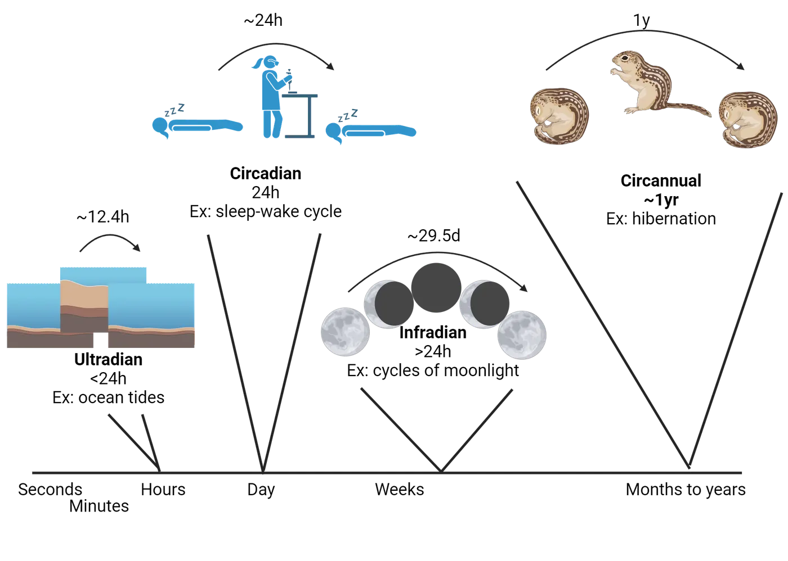
Circadian rhythms (circa = about, dia = day) describe rhythms with a period of about 24 hours and the best known of these is the daily rhythm of sleeping and wakefulness that many animals experience.
Ultradian rhythms have periods significantly shorter than 24 hours. An example of this would be heart rate, or the occurrence of multiple sleep cycles during the night (see below). Another type of ultradian rhythm are those that follow the cycles of tides; these are called circatidal and occur around every 12.4 hours. Marine organisms such as crabs time their locomotor activity to the occurrence of tides.
Infradian rhythms have periods significantly longer than 24 hours. For example, the reproductive rhythm (menstrual cycle) of women is a type of infradian rhythm. Circalunar rhythms are a type of infradian rhythm that follow the amount of moonlight that is available and last about 29.5 days. Examples of circalunar rhythms are seen in the reproductive cycles of marine animals. Circannual rhythms are another type of infradian rhythms—these are cycles that recur with a period of about 1 year. The onset of hibernation each year in Arctic ground squirrels would be a circannual rhythm.
Qualities of a Rhythm
A rhythm is a repeating event that occurs with a regular pattern (Circadian rhythm). We can characterize the features of a rhythm by describing its period or the duration of time it takes one cycle of the rhythm to occur. The phase of a rhythm describes a marker or point in a daily rhythm. A phase could be measured at the peak of a daily rhythm, such as the peak of melatonin secretion, or a trough in a rhythm such as the time when your body temperature is the lowest. A phase relationship or phase difference is the timing of the phase of a rhythm in relation to another daily timing event. For example, we can talk about the phase difference between when you wake up each day (the phase) and the time when your alarm goes off. The mesor of a rhythm is the average level of the rhythm across a full cycle, and the amplitude of a rhythm is the difference between the peak and trough of that rhythm. Frequency describes how often the rhythm occurs within a period of time. For example, pulses of luteinizing hormone secretion might occur at a frequency of 4 per hour Introduction.
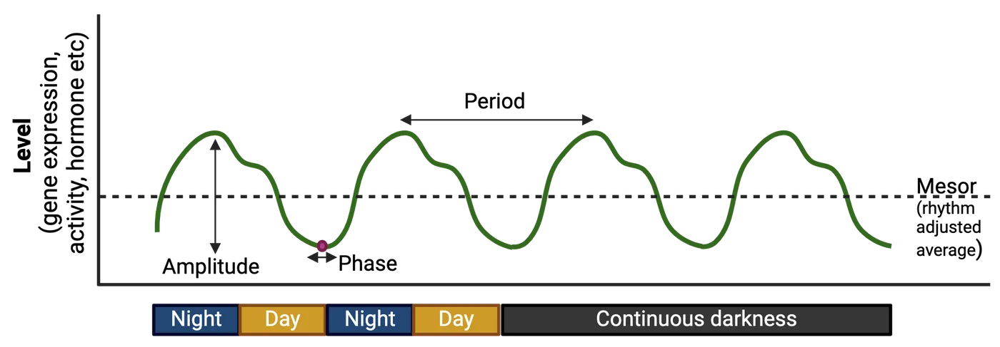
One fascinating concept about biological rhythms is that they are endogenous, meaning that they are driven by internal physiology rather than being entirely generated by external or exogenous cues. This means that rhythms will continue to be expressed even if the organism is isolated from the environment. For example, a variety of circadian rhythms continue to be expressed, even when the organism is maintained in an environment with constant lighting conditions, which lack any cues as to the time of day. This experiment has been done with numerous species including placing humans in underground apartments, or housing laboratory rodents or fruit flies in constant darkness. These experiments demonstrate that biological rhythms continue to oscillate in a consistent manner, though this rhythm may not perfectly match the solar day or other rhythmic environmental cues such as temperature fluctuations. For example, if you were to live in dim light in a sleep lab for seven days and we measured the time when you woke up each day, we would learn that the period of your daily sleep-wake cycle may run slightly faster or slightly slower than 24 hours. Under these constant conditions the rhythm is described as free-running. Humans can have a free-running period that normally ranges from 23.5 to 24.7 hours. In nocturnal lab rodents, a typical free-running period can range from 23-25 hours long, and in fruit flies population rhythms in emergence from the pupa and individual activity rhythm is about 24.5 hours. Of course, most organisms do not live in environments absent of cues, thus when an organism's internally generated rhythm is synchronized to the rhythms of the external environment we refer to this as entrainment.
Chronotypes
Are you someone who tends to stay up late into the night? A "night owl"? Or perhaps you go to bed early and wake up early? A “lark”? The tendencies of your body towards sleeping at some hours of the day and being more alert at other times of day is called a chronotype. Chronotypes exist on a spectrum and can be influenced by age, gender, and genetics. Chronotype has been linked to health outcomes, mood such as anxiety and depression, and the time of day you are most productive. For example, evening types ("owls") are more likely to have depression, anxiety, obesity, and lower grades compared to morning types ("larks") (van der Merwe, Munch, and Kruger, 2022; Walsh, Repa, and Garland, 2022; Yeo et al., 2023). Individuals with severe morningness or eveningness chronotypes may be diagnosed with conditions such as advanced sleep-wake phase disorder or delayed sleep-wake phase disorder (see Disorders of Sleep and Circadian Rhythms).
Your chronotype typically changes across your lifespan. Young children tend towards a morning preference and wake up and go to bed relatively early, whereas after adolescence, teenagers and young adults have difficulties falling asleep before 11 pm and may struggle to wake up for an early morning class or job. The peak in an evening chronotype occurs around age 19 after which the chronotype begins to shift to an earlier time. Thus, older individuals tend to be morning types, and this tendency to be a morning type continues to increase from age 35-80 (Roenneberg et al., 2007). Interestingly, there is also a sex difference in chronotypes, with women typically being earlier (larks) compared to men (Fischer et al., 2017). Some researchers hypothesized that these sex differences could be attributed to circulating hormones. This is supported by the fact that as women age and go through menopause and hormone depletion around the age of 40-50, the sex difference in chronotype goes away.
Although you can adapt your circadian rhythms to new environmental light cycles, such as would occur if you traveled to another time zone, it is difficult to intentionally change a chronotype. However, light therapy, melatonin treatment, and adherence to a sleep schedule (sleep hygiene) can help shift the timing of rhythms. People with an evening chronotype report that shifting their rhythms towards a morning chronotype can reduce depression and stress, improve mood, and improve cognitive performance (Facer-Child et al., 2019).
People Behind the Science: Dr. Pat DeCoursey
The very first phase response curve has been credited to Dr. Pat DeCoursey. Dr. DeCoursey was always interested in science and while in high school conducted a census of songbirds in a tract in Long Island, NY. She entered her project into a science talent contest where she won scholarship money that helped her attend Cornell University. This was followed by graduate school at University of Wisconsin, Madison where she studied the emerging field of chronobiology. She was working with flying squirrels which have a precise free running period of nearly 24 hours and she was interested in asking questions about entrainment. She gave the animals light pulses and plotted their dramatic shifts in activity onset to create the first photic phase response curve. In her long career in biological rhythms, she worked with numerous species including Eastern chipmunks, antelope squirrels, hamsters, and golden mantled ground squirrels and she helped write and edit a textbook entitled Chronobiology. Later in her career, she performed exceptionally challenging experiments designed to examine the importance of a functional circadian clock to the survival of animals in the wild.
Summary
Endogenous biological rhythms are found in nearly every organism on the planet. Internal clocks can help an organism anticipate changes in their environment. There are many types of biological rhythms that can range from seconds to hours to years; circadian rhythms are those that take about 24 hours to complete a cycle. We can characterize the components of a rhythm by analyzing their period, phase, amplitude, mesor and frequency. Furthermore, we can determine how an internal clock responds to the environment by constructing a phase response curve.
Key terms
Chronobiology, circadian, ultradian, circatidal, infradian, circannual, circalunar, rhythm, period, phase, phase difference, amplitude, mesor, frequency, endogenous, exogenous, free running, entrainment, chronotype, sleep hygiene, subjective day, subjective night, phase response curve, dead zone, diurnal, nocturnalReferences
Binkley, S., & Mosher, K. (1987). Circadian rhythm resetting in sparrows: Early response to doublet light pulses. Journal of Biological Rhythms, 2(1), 1–11. https://doi.org/10.1177/074873048700200101
Danner, F., & Phillips, B. (2008). Adolescent sleep, school start times, and teen motor vehicle crashes. Journal of Clinical Sleep Medicine: JCSM: Official Publication of the American Academy of Sleep Medicine, 4(6), 533–535.
De Coursey, P. J. (1960). Daily light sensitivity rhythm in a rodent. Science (New York, N.Y.), 131(3392), 33–35. https://doi.org/10.1126/science.131.3392.33
Dunlap, J. C., Loros, J. J., & DeCoursey, P. J. (2004). Chronobiology: Biological timekeeping. Sunderland, MA: Sinauer Associates.
Dunster, G. P., de la Iglesia, L., Ben-Hamo, M., Nave, C., Fleischer, J. G., Panda, S., & de la Iglesia, H. O. (2018). Sleepmore in Seattle: Later school start times are associated with more sleep and better performance in high school students. Science Advances, 4(12), eaau6200. https://doi.org/10.1126/sciadv.aau6200
Facer-Childs, E. R., Middleton, B., Skene, D. J., & Bagshaw, A. P. (2019). Resetting the late timing of 'night owls' has a positive impact on mental health and performance. Sleep Medicine, 60, 236–247. https://doi.org/10.1016/j.sleep.2019.05.001
Fischer, D., Lombardi, D. A., Marucci-Wellman, H., & Roenneberg, T. (2017). Chronotypes in the US - Influence of age and sex. PloS One, 12(6), e0178782. https://doi.org/10.1371/journal.pone.0178782
National Sleep Foundation. (2014). 2014 Sleep in America (R) Poll: Sleep in the modern family (pp. 1–51). Arlington, VA: National Sleep Foundation.
Sawyer, H., & Taie, W. S. (2020). Start time for U.S. public high schools. National Center for Educational Statistics, pub. 2020006.
van der Merwe, C., Münch, M., & Kruger, R. (2022). Chronotype differences in body composition, dietary intake and eating behavior outcomes: A scoping systematic review. Advances in Nutrition (Bethesda, Md.), 13(6), 2357–2405. https://doi.org/10.1093/advances/nmac093
Vinayak, P., Coupar, J., Hughes, S. E., Fozdar, P., Kilby, J., Garren, E., Yoshii, T., & Hirsh, J. (2013). Exquisite light sensitivity of Drosophila melanogaster cryptochrome. PloS Genetics, 9(7), e1003615. https://doi.org/10.1371/journal.pgen.1003615
Walsh, N. A., Repa, L. M., & Garland, S. N. (2022). Mindful larks and lonely owls: The relationship between chronotype, mental health, sleep quality, and social support in young adults. Journal of Sleep Research, 31(1), e13442. https://doi.org/10.1111/jsr.13442
Yeo, S. C., Yabuki, H., Charoenthammanon, R. S., & Gooley, J. J. (2023). University students' diurnal learning-directed behavior is strongly influenced by school start times with implications for grades. Sleep, 46(7), zsad141. https://doi.org/10.1093/sleep/zsad141
Practice The multiple-choice and fill-in-the-blank questions for this section are interactive and live on OpenStax, so they are not carried here: open the book on openstax.org.
15.2Where Are Rhythms in the Brain?
By the end of this section, you should be able to
- Draw the pathway from light to the master clock in the brain and from the master clock to its targets.
- Explain how the negative feedback loop of clock gene transcription and translation functions.
- Explain the experiments and evidence that demonstrated that the master clock is contained in the SCN.
- Explain the role of the SCN, retina, and the pineal gland in circadian rhythmicity.
Where in the body is the biological clock that regulates circadian rhythmicity? As we have described in the previous section, nearly all organisms possess circadian rhythms, including birds, mammals, plants, and single celled organisms. Across these various organisms you can find functional clock mechanisms within many different tissues. For example, the retina secretes melatonin in a rhythmic daily pattern in birds. Here we will focus on the clock in mammals, which is located in an area of the brain known as the suprachiasmatic nucleus (SCN) (Suprachiasmatic nucleus of the hypothalamus), but we will also note organismal variation. The SCN is often described as the master clock in mammals, as it drives rhythms in physiology and behavior that, in turn, synchronize the timing of clocks in other tissues. The SCN receives light input from cells in the retina, and in turn this brain structure regulates rhythms throughout the body.
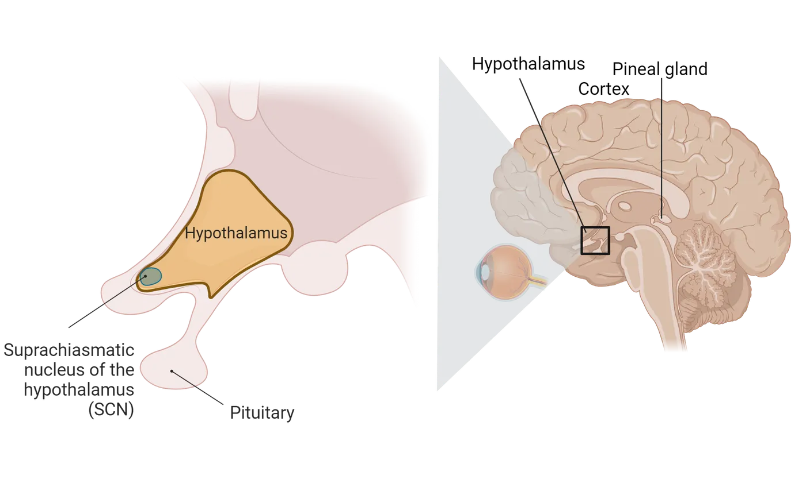
The Retina
In mammals, the retinas transmit photic information from the environment to the brain in order to synchronize internal rhythms with the external world. The retina possesses a multilayered structure designed to detect and process light and transmit that information to the brain, for both image forming and non-image forming purposes (see Introduction). Rods and cones are the primary photoreceptors for detecting light for image formation, but there is also a subset of retinal ganglion cells that contain photopigments and can detect light. These intrinsically photosensitive retinal ganglion cells (ipRGCs) send their long axons directly to the SCN in the hypothalamus. The SCN contains the master circadian clock which we will discuss next. The ipRGCs communicate to the SCN via the retinohypothalamic tract, providing a rod and cone-independent photoreceptive mechanism (Non-image-forming retinal ganglion cells). The presence of these cells is a reason why some individuals with blindness caused by the degeneration of rods and cones can still show entrainment to light/dark cycles.
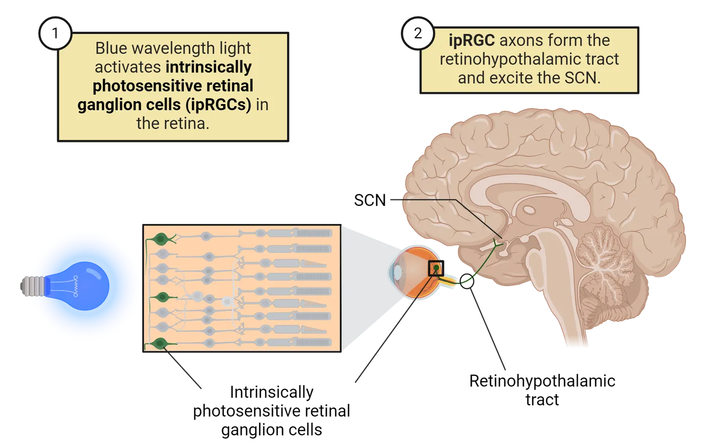
ipRGCs use a novel photopigment called melanopsin for transducing energy from photons into chemical signals. Melanopsin is specifically found only in ipRGCs and, in its absence, ipRGCs lose their photoreceptive responses. Melanopsin is maximally sensitive to light at a wavelength of about 480 nm, which is in the blue part of the spectrum. Blue light is emitted by many common devices that you probably use everyday, including smart phones, computer screens, tablets, video game systems, and LED lights. Humans are sensitive to blue light and this sensitivity to blue light exposure is linked to the negative effects of artificial light at night on sleep and circadian rhythms. Specifically, blue light suppresses melatonin secretion (see below section on melatonin), which can disrupt rhythms and lead to reduced sleep, disrupted sleep quality and delays the timing of sleep (Silvani, Werder, Perret; 2022). The use of blue light (“night mode”) filters for cellular phones and screens, or wearing blue light filtered glasses at night when you are working on screens are two ways of mitigating the negative impacts of too much blue light exposure at night.
The Suprachiasmatic Nucleus of the Hypothalamus
The SCN are bilateral structures that are located in the ventral portion of the brain within the hypothalamus. They are medially located and are positioned next to the 3rd ventricle, a space where cerebrospinal fluid flows. They are also located above (supra) the optic chiasm, the location of the crossing of the optic nerves. They contain roughly 20,000 cells (in a rodent) that produce a variety of neurotransmitters including vasopressin, vasoactive intestinal polypeptide, gastrin-releasing peptide, somatostatin, and GABA.
There are numerous pieces of evidence that have established that the master circadian clock is located within these paired nuclei. First, when this area is removed by electrical lesioning, the animal loses any rhythmic patterns in physiology or behavior. For example, a hamster with a lesioned SCN will continue to exhibit wheel running, but this locomotor activity will no longer occur in a predictable schedule and the animal may have bouts of running throughout the day and night (Ralph et al., 1990). Second, when SCN tissue is removed from an animal and maintained in thin slices in a culture dish, the SCN continues to exhibit spontaneous free-running rhythms in electrical activity and in glucose metabolism for several days, similar to what would be seen if the SCN had remained in the animal (Newman and Hospod, 1986).
Lastly, the most conclusive evidence that the SCN contains the master clock was generated in experiments where the SCN was first removed and then replaced (Ralph et al., 1990). Hamsters had their SCN electrically lesioned, and as expected they had arrhythmic patterns of activity (SCN lesion and transplant experiment, steps 1 and 2). SCN tissue from the brains of fetal hamsters was then transplanted into the 3rd ventricle of the SCN lesioned animals. The ventricle is a space within the brain where cerebrospinal fluid flows, and the tissue was deposited near to the original SCN location. The lesioned animals began to express rhythms in locomotor activity again, that is, they began to have organized bouts of wheel running (SCN lesion and transplant experiment, step 3).
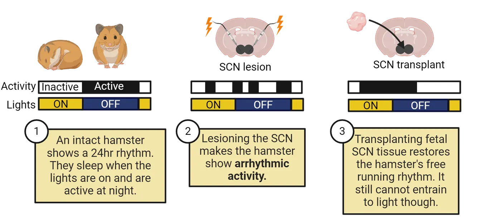
This study was extended by using hamsters that had a genetic mutation associated specifically with circadian clock function, such that animals that were homozygous for this mutation had a free-running period of 20 hours whereas wildtype hamsters without the mutation had a free-running period of 24 hours. The lesion-replacement experiment was repeated, but in this case the wildtype SCN lesioned animals received fetal SCN tissue collected from the mutant strain of hamsters. They also lesioned the SCN of animals with the mutant gene, and replaced their SCN with tissue from wildtype animals. The lesioned animals regained patterns of locomotor activity. However, the period of that activity matched that of the donor animals and not the host animal. That is, a wildtype animal exhibited wheel running patterns that had a period of 20 hours! Furthermore, through additional experiments investigators established that the implanted SCN tissue could generate rhythms in the host animal through the secretion of a neural factor, rather than by forming synapses with the recipient animal. However, implanted SCN tissue did not result in the recipients being able to entrain to light/dark cycles, indicating that neural connections were necessary for that function. These elegant experiments provided the strongest evidence that the SCN was the neural tissue generating daily rhythms that regulate physiology throughout the body (Silver et al., 1996; Ralph et al., 1990).
The SCN is also found to play a role in circadian rhythmicity in other organisms. In lizards, SCN lesion studies in two different species abolished circadian patterns of locomotor activity (Tosini, Bertolucci, and Foa; 2001). Further, studies in quail and sparrows revealed that there are two paired structures, the ventral SCN and medial SCN which also appear to play similar roles to the mammalian SCN (Cassone, 2014).
Rhythm Circuitry
Central circadian organization in vertebrates is composed of three major structures: the retina, the pineal gland, and the SCN. However, these tissues vary significantly in importance in different organisms. For example, the retina and the pineal gland secrete melatonin in vertebrates, an important hormone for sleep regulation. Additionally, if you take the retina from a non-mammalian vertebrate such as a bird, and incubate it in a dish (in vitro), melatonin continues to be released in a circadian manner. Thus, this structure can act as a daily pacemaker (Falcón et al., 2009). Furthermore, the pineal gland in fish and frogs contains photosensitive cells but these are absent in mammals. In this section, we will focus on the circadian clock circuitry in mammals.
As we have discussed, information about environmental light is transmitted to the SCN from the retina via the retinohypothalamic tract, a pathway of retinal ganglion cells that is not part of the image-forming visual system (Inputs to the SCN).
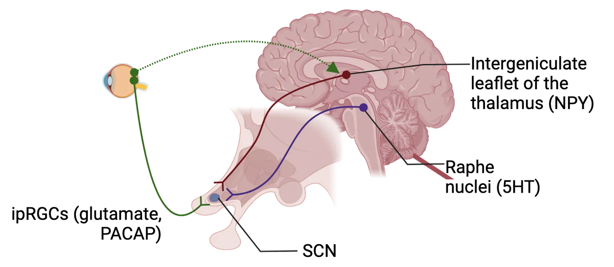
When light shines on the eyes, this pathway releases glutamate and pituitary adenylate cyclase-activated peptide (PACAP) into the SCN, producing an excitatory response. The influence of this input is modulated by a variety of neuropeptides and other signaling molecules, and its effects on circadian clock function vary with the time of day. The destruction of this pathway renders the circadian clock unable to entrain to light/dark cycles. However, the clock still runs as long as the SCN remains intact, with a period that reflects its own internal rhythm.
A second major input to the SCN is a pathway from the midbrain raphe nuclei which contains the neuropeptide serotonin (5HT). Neural activity in the raphe is highly reflective of the arousal state of an animal, with higher activity levels in the raphe associated with increased locomotor activity. Elevated locomotor activity increases serotonin release in the SCN. Increased locomotor activity and serotonin mimics (agonists) have inhibitory effects on the ability of light to shift the timing of the clock in the SCN. Light signals to the SCN can therefore be adjusted according to the behavioral context in which they are perceived. Thus, an animal exposed to light at night while resting may experience a phase shift, adjusting their clock timing for subsequent days, while one receiving similar light exposure while engaging in an intense activity bout may experience no shift or a lesser shift in timing.
A third pathway, called the geniculo-hypothalamic tract, is a multisynaptic connection from the retina to the intergeniculate leaflet of the thalamus, which in turn sends a Neuropeptide Y (NPY)-containing projection to the SCN. This pathway is thought to integrate both photic (light) and nonphotic information and is capable of regulating the entrainment of the SCN to both light/dark cycles and nonphotic signals. Nonphotic stimuli could be regular presentations of a running wheel, melatonin injections, or meals.
The SCN itself has its own structure of connectivity. This structure is characterized by overlapping subregions that are identified on the basis of synaptic connections or neuropeptide expression. While these divisions are often oversimplifications of the intricate structure of the SCN, they are helpful in understanding the general flow of information within the circadian clock mechanism. One of the most common constructs divides the SCN into a retinorecipient core region and a rhythmic shell. The core is generally located in the ventral part of the mammalian SCN, is heavily innervated by retinal afferents from the optic chiasm, and contains a dense plexus of neurons expressing vasoactive intestinal polypeptide. The shell is characterized by high amplitude rhythmicity in gene expression and is enriched in cells expressing the neuropeptide vasopressin. Regardless of their location within the nucleus and their neuropeptide expression, SCN neurons appear to uniformly express GABA as the primary classical neurotransmitter.
Neurons of the SCN project to a variety of other brain regions, mostly in the hypothalamus and thalamus. These projections are linked to rhythmic control of physiology and behavior, including variables such as body temperature, locomotor activity, the sleep/wake cycle, and various hormonal rhythms.
The Pineal Gland and Melatonin
Melatonin is a hormone produced primarily in mammals by the pineal gland, which is located in the roof of the diencephalon in humans. Melatonin secretion is directly tied to the circadian clock, with high levels during the night and very low levels during the day (How light gets in the brain).

Melatonin levels are directly suppressed by the presence of ambient light; thus, exposure to bright light during the night results in a very rapid decline in circulating melatonin. The melatonin rhythm is one of the casualties of screen use in the bedroom—exposing one's eyes to bright light from a phone or tablet screen in the middle of the night suppresses melatonin release and can have negative consequences for sleep quality. Melatonin is currently utilized as a therapeutic for a wide variety of conditions such as insomnia, jet lag, circadian rhythm and shift work sleep disorders, and to help support sleep in the elderly, who may suffer from reduced melatonin production.
Although melatonin’s primary role with regard to human health is the treatment of rhythm disorders, it has a major role in the regulation of reproduction in seasonally breeding species such as sheep, deer, and golden hamsters. In these species, the duration of the nocturnal rise in melatonin serves as a measure of daylength, with long nights, and thus long period of melatonin secretion, indicating winter photoperiods and the suppression of reproductive physiology and behavior. Although humans are not considered to be seasonal breeders, there are melatonin receptors present in reproductive tissues in humans and there is some evidence that melatonin may play a role in a variety of reproductive processes (Olcese, 2020).
The pineal gland, through melatonin secretion, may have a more dominant role in circadian clock function in many non-mammalian species. In zebrafish, for example, the pineal gland functions as a central circadian pacemaker and directly regulates the sleep/wake cycle (Aranda-Martínez et al., 2022). Similarly, in pigeons, circadian rhythms in pineal melatonin directly regulate sleep and wakefulness (Phillips and Berger, 1992).
Rhythms in Clock Genes
Circadian rhythms at the level of the organism are ultimately driven by rhythms at the level of individual cells. Within each cellular clock, rhythms are generated and expressed at the level of gene and protein expression. Some genes and proteins may build up throughout the day and decrease during the night, while others may show the opposite pattern. An essential set of genes, known as the core clock genes, interact with one another to produce self-sustaining rhythms with periods close to 24 hours, and which can respond to external stimuli to adjust clock timing when necessary.
The molecular clock is generated by interlocking transcription/translation feedback loops, which function to produce robust rhythms of gene expression with a period of about 24 hours. These negative feedback loops are composed of a set of highly conserved core clock proteins that both participate in the central machinery of the clock and drive rhythmic expression of other genes (Rhythms in clock genes). Four core clock gene families sit at the center of the molecular clock: Clock and Bmal1, which code for activators, and Per and Cry, which are repressors. The proteins CLOCK and BMAL1 are subunits of a transcription factor that activate transcription of Clock and Bmal1 and Per and Cry genes as well as other clock-controlled output genes (Step 1 in Rhythms in clock genes). Essentially, these proteins turn on the production of the mRNA for Clock and Bmal1, which code for activators, and Per and Cry. These genetic mRNAs for Clock and Bmal1, which code for activators, and Per and Cry then leave the nucleus and travel to the cytoplasm where they are transcribed into their respective proteins (Step 2 in Rhythms in clock genes). The PER and CRY proteins bind to each other (heterodimerize) in the cytoplasm and move (translocate) to the cell nucleus where they inhibit the transcriptional activation by the CLOCK/BMAL1 complex (Step 3 in Rhythms in clock genes). In other words, the PER/CRY protein complex turns off the activity of the CLOCK/BMAL1 complex. Activity of these proteins are regulated by a variety of kinases, phosphatases, and other modulators. Mutations in many of these regulatory proteins can modulate the free-running period of the clock by changing the degradation rate of one or more of the clock proteins.
![Top is a diagram of inside a cell, showing interactions between proteins and gene expression. 1) CLOCK and BMAL1 induce expression of per and cry genes by binding to their promoters. 2) PER and CRY protein build up in the cytoplasm. 3) PER and CRY enter the nucleus where they inhibit CLOCK and BMAL1 from binding to DNA. PER and CRY expression is blocked. 4) Existing PER and CRY degrade. CLOCK and BMAL1 can bind again and restart per and cry expression. Bottom is a line graph with day/night on the x-axis. Quantities of CLOCK/BMAL binding to per and cry promoters is shown as one curve and per and cry mRNA levels are another curve. The two curves fluctuate in opposition, with per/cry mRNA levels high at night and low during the day.](../assets/textbook/img/Image-15.03_Rhythms-in-clock-genes.webp)
The presence of interlocking feedback loops strengthens and maintains accurate circadian timing in the presence of noise and environmental disruptions. They also help to generate phase differences in circadian transcriptional output that optimally time gene expression which can differ depending upon the specific tissues or cell types.
The molecular clock mechanism also has a number of functional redundancies that maintain function in the event of genetic mutations. For example, in mice there are three homologues of the period gene called Per1, Per2, and Per3. A knockout of any one of these genes is not sufficient to eliminate circadian rhythmicity, but a mouse with a Per1/Per2 double knockout does lose rhythmicity. The only single gene knockout known to eliminate clock function in the SCN is the Bmal1 knockout. Such mice lack molecular and behavioral circadian rhythms, and have additional abnormal phenotypes such as decreased activity, decreased body weight, and shortened lifespan. Although the SCN is a network of thousands of neurons that together function as a circadian clock, many, if not most, individual cells have the cellular machinery necessary to function as a clock. That is, cells throughout the body have the same circadian clock gene components.
Summary
Your brain contains a master clock which regulates your daily rhythms from your gene and protein changes in cells to your sleep patterns. In mammals, this clock is found in the SCN, a collection of cells that express clock genes, neurotransmitters and neuropeptides. Elegant lesion and replacement experiments established the SCN as the site of the master clock. The retina sends information to the SCN via a number of connecting pathways, including ipRGCs that contain melanopsin. The SCN also expresses clock genes that have a feedback loop that regulates daily rhythms. There is a diversity of species that exhibit biological rhythms, and thus additional research is needed to determine when, how, and why these rhythmic processes emerged.
Key terms
suprachiasmatic nucleus, photoreceptors, intrinsically photosensitive retinal ganglion cells (ipRGCs), retinohypothalamic tract, melanopsin, arrhythmic, geniculo-hypothalamic tract, nonphotic, retinorecipient core, rhythmic shell, melatonin, transcription/translation feedback loop, clock genes, heterodimerize, translocateReferences
Allada, R., & Chung, B. Y. (2010). Circadian organization of behavior and physiology in Drosophila. Annual Review of Physiology, 72, 605–624. https://doi.org/10.1146/annurev-physiol-021909-135815
Aranda-Martínez, P., Fernández-Martínez, J., Ramírez-Casas, Y., Guerra-Librero, A., Rodríguez-Santana, C., Escames, G., & Acuña-Castroviejo, D. (2022). The zebrafish, an outstanding model for biomedical research in the field of melatonin and human diseases. International Journal of Molecular Sciences, 23(13), 7438. https://doi.org/10.3390/ijms23137438
Cassone, V. M. (2014). Avian circadian organization: A chorus of clocks. Frontiers in Neuroendocrinology, 35(1), 76–88. https://doi.org/10.1016/j.yfrne.2013.10.002
Cassone, V. M., & Menaker, M. (1984). Is the avian circadian system a neuroendocrine loop?. The Journal of Experimental Zoology, 232(3), 539–549. https://doi.org/10.1002/jez.1402320321
Falcón, J., Besseau, L., Fuentès, M., Sauzet, S., Magnanou, E., & Boeuf, G. (2009). Structural and functional evolution of the pineal melatonin system in vertebrates. Annals of the New York Academy of Sciences, 1163, 101–111. https://doi.org/10.1111/j.1749-6632.2009.04435.x
Green, D. J., & Gillette, R. (1982). Circadian rhythm of firing rate recorded from single cells in the rat suprachiasmatic brain slice. Brain Research, 245(1), 198–200. https://doi.org/10.1016/0006-8993(82)90361-4
Loudon, A. S. (2012). Circadian biology: A 2.5 billion year old clock. Current Biology: CB, 22(14), R570–R571. https://doi.org/10.1016/j.cub.2012.06.023
Menaker, M., Moreira, L. F., & Tosini, G. (1997). Evolution of circadian organization in vertebrates. Brazilian Journal of Medical and Biological Research = Revista Brasileira de Pesquisas Medicas e Biologicas, 30(3), 305–313. https://doi.org/10.1590/s0100-879x1997000300003
Newman, G. C., & Hospod, F. E. (1986). Rhythm of suprachiasmatic nucleus 2-deoxyglucose uptake in vitro. Brain Research, 381(2), 345–350. https://doi.org/10.1016/0006-8993(86)90086-7
Olcese, J. M. (2020). Melatonin and female reproduction: An expanding universe. Frontiers in Endocrinology, 11, 85. https://doi.org/10.3389/fendo.2020.00085
Phillips, N. H., & Berger, R. J. (1992). Melatonin infusions restore sleep suppressed by continuous bright light in pigeons. Neuroscience Letters, 145(2), 217–220. https://doi.org/10.1016/0304-3940(92)90026-4
Ralph, M. R., Foster, R. G., Davis, F. C., & Menaker, M. (1990). Transplanted suprachiasmatic nucleus determines circadian period. Science (New York, N.Y.), 247(4945), 975–978. https://doi.org/10.1126/science.2305266
Silvani, M. I., Werder, R., & Perret, C. (2022). The influence of blue light on sleep, performance and wellbeing in young adults: A systematic review. Frontiers in Physiology, 13, 943108. https://doi.org/10.3389/fphys.2022.943108
Silver, R., LeSauter, J., Tresco, P. A., & Lehman, M. N. (1996). A diffusible coupling signal from the transplanted suprachiasmatic nucleus controlling circadian locomotor rhythms. Nature, 382(6594), 810–813. https://doi.org/10.1038/382810a0
Tosini, G., Bertolucci, C., & Foà, A. (2001). The circadian system of reptiles: A multioscillatory and multiphotoreceptive system. Physiology & Behavior, 72(4), 461–471. https://doi.org/10.1016/s0031-9384(00)00423-6
Practice The multiple-choice and fill-in-the-blank questions for this section are interactive and live on OpenStax, so they are not carried here: open the book on openstax.org.
15.3Regulation of Sleep
By the end of this section, you should be able to
- Describe several theories to explain why we sleep.
- Differentiate between the different stages of sleep.
- Differentiate between circadian and homeostatic regulation of sleep.
- List several ways in which disruption of sleep (shift work, light at night) impacts human health.
Summary
There are several overlapping hypotheses for why sleep exists including energy conservation, restoration of energy, and aiding growth and development. Sleep can be measured in the lab using a PSG which detects changes in the phases of sleep. There are non-REM (3 stages) and REM sleep stages that are differentiated by different types of brain wave activity patterns. The flip flop model of sleep-promoting neurons in the VLPO have a mutual inhibition with wake promoting cell populations in the brainstem and hypothalamus. This is referred to as a flip flop switch and is maintained in part by a variety of neurotransmitters including acetylcholine, norepinephrine, serotonin and GABA. Finally, there are sex differences in sleep that may be influenced in part by circulating hormones.
Why Does Sleep Exist?
At first glance, the entire process of sleep seems maladaptive. While sleeping, organisms are not searching for food or mates and have reduced sensitivity to environmental stimuli, making them more vulnerable to predators or hazardous events. Despite this, almost all animals appear to sleep, even when they lack a central nervous system as is the case with Hydra (Kanaya et al., 2020). It therefore seems likely that sleep evolved in very primitive animals and gradually took on additional functions throughout the evolution of the animal kingdom.
In humans, sleep regulation can be modeled using the two-process model of sleep regulation. Process C refers to the circadian rhythms in the timing of sleep and wakefulness. There are endogenous rhythms to when you feel sleepy and when you feel most awake. For example, most of us feel fatigued and sleepy during the later hours of the evening, and we feel most alert in the morning hours. There is also a period of reduced alertness which occurs in the midafternoon. You may have experienced this as sleepiness after lunch. These cyclical rhythms in sleepiness and wakefulness are regulated by the circadian timekeeping system and the master clock found in the SCN. Process S refers to the homeostatic pressure to get restorative sleep. The more time it has been since you slept, the greater the pressure to fall asleep. After you have been awake for a while, a certain amount of sleep debt has accumulated, and you need a period of sleep to eliminate the debt. The interaction between these two processes determines the amount of sleep pressure at any given time and the likelihood of falling asleep.
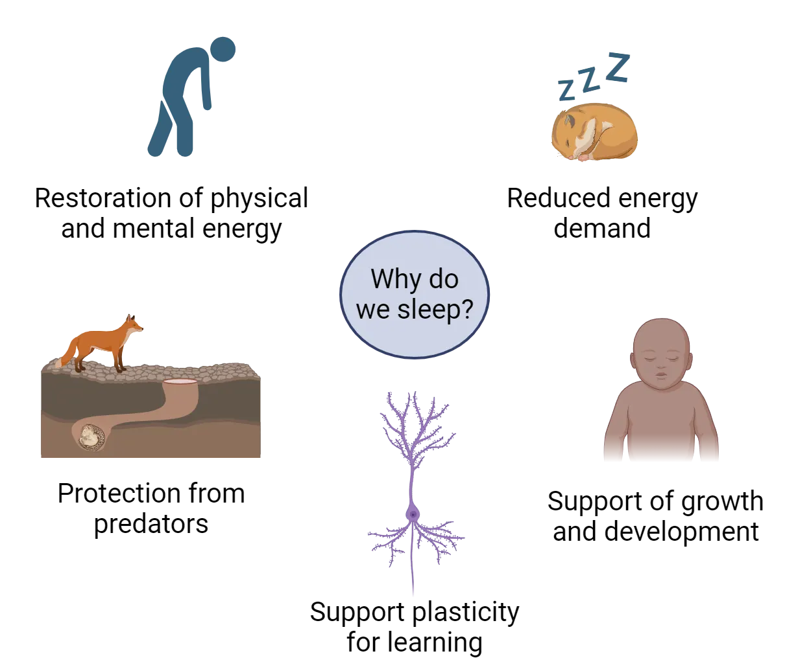
One major theory of the function of sleep is that sleep performs a restorative function, without which an animal’s performance is impaired in some fashion (Why we sleep). In humans, when we don’t sleep, we feel tired and our ability to function is decreased on both physical and mental tasks. After sleeping, we feel better. There is significant evidence in support of this function at the behavioral, physiological, and molecular levels. Sleep deprivation impairs, among other things, cognitive function, tissue repair, attention to tasks, and even increases cancer risk.
One possible mechanism of the restorative function of sleep focuses on the neurotransmitter adenosine. Adenosine is released by neurons in response to excessive firing and metabolic exhaustion (Lovatt et al., 2012). During wakefulness, adenosine builds up in the brain, promoting sleepiness. It is then reduced during sleep. The impact of adenosine is counteracted by caffeine, giving coffee and other caffeinated beverages their ability to defer sleep onset. Caffeine has this effect by blocking action at the A2A adenosine receptor. This effect is temporary—once the caffeine wears off, a person is just as sleepy as if they had never had the caffeine.
Another possible mechanism for the restorative function of sleep is waste clearance. Metabolic waste products are removed from the brain at a higher rate during sleep than during wakefulness (Albrecht and Ripperger, 2018). One mechanism that clears this neural waste is known as the glymphatic system and this has been the subject of new and exciting research in neuroscience. In this system, cerebral spinal fluid (CSF) enters the brain then has an exchange with the brain tissue via the interstitial fluid. The byproducts of metabolism are collected and removed from the brain. The glymphatic system is active when animals are sleeping and it is largely quiet when animals are awake. Research has demonstrated that this rhythm in clearance is circadian in nature (Hablitz et al., 2020). Thus, sleep may serve as an active period when the brain is removing toxic waste (Jessen et al., 2015).
A second popular theory of sleep function is that it serves an energy conservation function. Energy usage is reduced during sleep, with the amount of savings varying from animal to animal. Animals spend a considerable amount of their energy budgets looking for food, and the reduction in energy usage during sleep could make a difference in evolutionary success. In fact, when we sleep our metabolism decreases by 10% (Sharma and Kavuru, 2010). Some species gain significant energy savings during sleep by reducing body temperature, but the reduction in muscle usage provides for significant savings. Many species also adopt sleeping postures that conserve heat, reducing the energy usage for body temperature homeostasis. At times when food is scarce, the reduction in metabolic rate during sleep could allow an animal to survive for a longer period of time than would otherwise be possible. While this theory is appealing, there are examples that do not support it. For example, some animals sleep a lot whereas others sleep very little. Lions and zebras both use relatively little energy; male lions do not hunt and grazing expends a small amount of energy. Yet lions sleep 15-18 hours a day and zebras sleep as little as 3-4 hours a day (Siegel 2005).
A third theory is that sleep enforces inactivity during periods of time when an animal’s survival would be negatively impacted by active behaviors. Thus, animals with specialized adaptations for nocturnality sleep during the day, when they would be more vulnerable to predation, and diurnal animals dependent on vision are safer being inactive during the night. However, it is not clear whether sleep is really necessary to enforce this kind of behavior pattern, with the added cost of loss of responsiveness to sensory stimuli.
Finally, there is the idea that in animals with complex nervous systems sleep serves an important role in the growth, development, and plasticity of the brain, particularly as it relates to functions around learning and memory. As an example, sleep deprivation studies have confirmed that learning and memory are negatively impacted by insufficient sleep through effects on signaling in hippocampal neurons (see Introduction).
These theories are not mutually exclusive. It seems likely that sleep evolved in response to bioenergetic pressures that resulted from circadian rhythms of energy availability and took on additional functions as nervous systems developed and became more complex.
Stages of Sleep
There is a clear distinction between your activity levels during sleep when compared to being awake. However, getting a good night of sleep is not a uniform process where you lay immobile in bed and your brain becomes quiet. In reality, your brain and your body cycle through 4 different stages and the whole cycle can take about 90 minutes (Hypnogram). You may experience 3-5 cycles per evening.
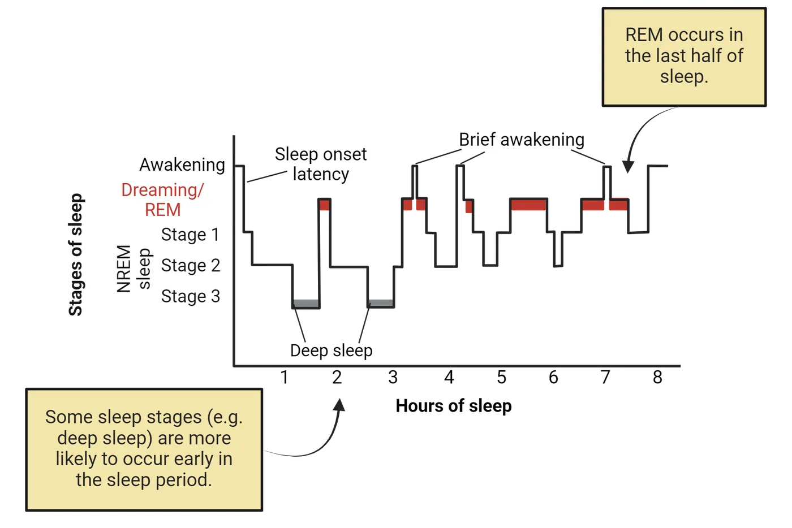
The stages comprising a cycle can be divided into non-REM (3 stages) and REM sleep. Non-REM sleep (also referred to as NREM sleep) is characterized by large amplitude, slow oscillations on the EEG, representing synchrony of electrical activity in the cortex (EEG measurement of sleep). Muscle tone is reduced and movement is limited (but not eliminated).
- Stage 1 non-REM sleep is a transitional stage that occurs as one moves from wakefulness into sleep. This period lasts less than 10 minutes and is considered the lightest stage of sleep because you are easily woken up during this stage.
- Stage 2 non-REM sleep is where the majority of your sleeping time is spent. Your body temperature drops, your breathing rate slows, and your brain electrical patterns exhibit sleep spindles (Sleep spindles and delta waves). Spindles appear on the EEG as rapid and rhythmic bursts of activity. Spindles are associated with learning capacity. This period lasts about 25 minutes.
- Stage 3 non-REM sleep, or delta sleep, or slow wave sleep is a deeper sleep where it may be hard to wake up even if there are loud noises or stimuli in the environment. The body's breathing rate is slowed and muscles are relaxed. In the EEG, delta waves appear which are slow frequency and high amplitude waves of electrical activity (Sleep spindles and delta waves). This is the deepest stage of sleep and is the critical stage for restorative sleep as it is a time when the body clears out waste, builds bone and muscle and the immune system is strengthened. Decreases in the amount of slow wave sleep is associated with more fatigue during the day. Importantly, this stage of sleep is critical for memory consolidation.
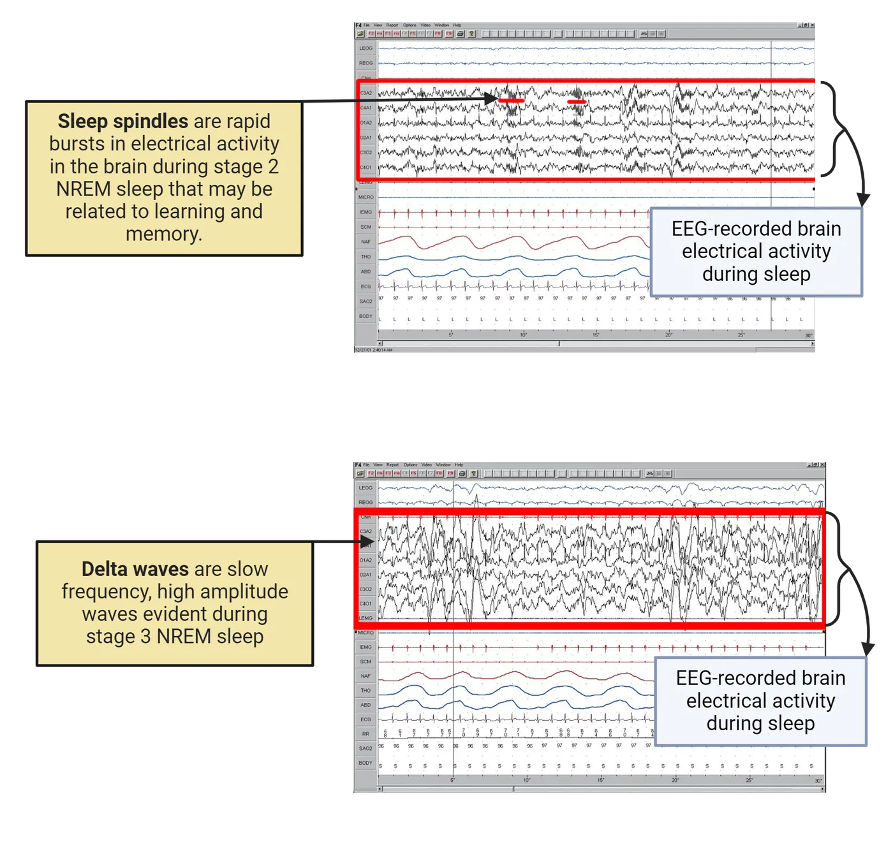
Finally, about 90 minutes after you fall asleep you enter the REM sleep phase. Here your brain EEG has electrical activity that resembles wakefulness; as such, this stage is referred to as "paradoxical sleep". Despite brain activity that resembles the waking state, your muscles are immobilized, breathing is fast and irregular, and your eyes exhibit rapid movements. This stage can last 10 minutes in the first sleep cycle of the evening, but as the night progresses, you spend an increased amount of time in the REM portion of the sleep cycle, perhaps as long as 60 minutes by the end of the night. In a typical night of sleep, you do not progress through the sleep stages in order. Initially you may enter stage 1 through 4 in sequence before reaching REM sleep, but at the end of the night you may cycle between REM and stage 2 and stage 3 non-REM sleep.
Regulating Sleep
When we are awake there are multiple brain areas that are actively responsible for keeping us in an awake state. However, you may not realize that when we are asleep our brains are not in an "off" state; instead, our brains remain engaged in active processes. While we sleep there are specific brain areas that are turned "on" to help regulate our sleep. During our waking period there are multiple brain areas, working together as part of the ascending arousal system, that secrete neurotransmitters which then maintain wakefulness (see Introduction (Sleep circuitry). The neurotransmitters that are secreted go to a sleep-promoting brain area to turn off its activity. This brain area, known as the ventrolateral preoptic area (VLPO, a region of the hypothalamus), communicates back to the wake-promoting system, and inhibits these structures in order to maintain a quiescent state. Thus, there is a brain area that promotes sleep, a second set of structures that promotes wakefulness, and these two systems inhibit one another. This is referred to as the flip flop switch.
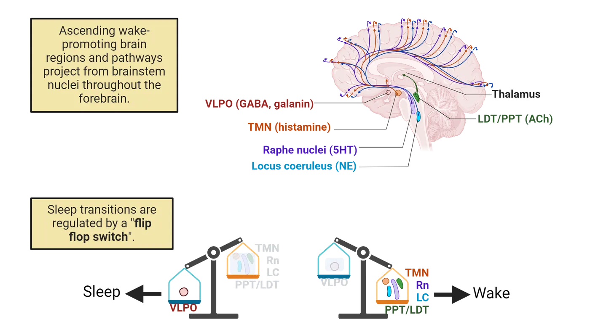
To be more specific, during wakefulness, in the brainstem, the locus coeruleus (LC) secretes norepinephrine and the raphe nuclei secretes serotonin. In the hypothalamus, the tuberomammillary nuclei (TMN) secrete histamine. Additionally, in the brainstem, near the pons are two groups of cells that secrete acetylcholine. These cells are located in the lateral dorsal tegmentum (LDT) and the pontine peduncular tegmentum (PPT). Together, these wake-promoting areas send projections through the rest of the brain to help maintain wakefulness. In contrast, there is a group of cells in the VLPO of the hypothalamus which promotes sleep. As mentioned above, there is a mutual inhibition between the sleep-promoting regions of the VLPO and the wake-promoting regions of the brainstem and hypothalamus. Specifically, the VLPO is inhibited by norepinephrine and serotonin via connections from LC and raphe nuclei; this occurs during wakefulness. The cells of the VLPO send neuronal projections containing the inhibitory amino acid GABA and the inhibitory neurotransmitter galanin to the aforementioned sleep-promoting brain areas. The VLPO thus inhibits these areas and as a result maintains sleep. These connections are diagrammed in Reciprocal inhibitory connections of sleep areas.
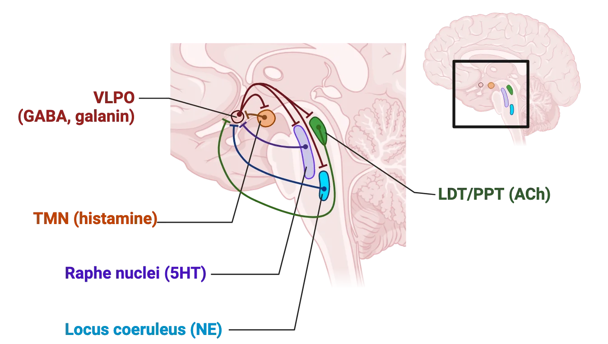
Neuroscience across Species: Comparative Sleep
Adaptation to a variety of ecological niches has resulted in a wide range of sleep strategies and some unusual variations in sleep physiology. Just across mammals, sleep duration can vary from 4-20 hours per day, and length of time spent sleeping represents just one way in which sleep differs between species. Sleep may confer an advantage to remain quiet when predators are present, or to conserve energy for when food (prey) is abundant. For example, in sloths in the wild, predation appears to determine when they are sleeping and when they are awake (Voirin et al., 2014). The little brown bat sleeps for up to 20 hours a day, which might be due to the fact that its food source of moths and mosquitos is only present in a small window of time at dusk (Siegel, 2022).
Some mammals (whales, dolphins, fur seals, and sea lions) exhibit an unusual pattern of sleep called unihemispheric sleep. When in this state, one half of the brain is in a state of slow wave sleep at a time. Given the requirements of living in an aquatic environment, this makes sense: aquatic mammals must retain voluntary muscle control because they need to swim and surface to breathe, and maintain contact with conspecifics and be alert for threats. Behaviorally, the animals generally keep one eye open and one closed, with the open eye connected to the cerebral hemisphere that is awake. The open eye is usually the one directed towards other members of the group, rather than looking outward for threats, suggesting that these animals are utilizing unihemispheric sleep, in part, to maintain group cohesion. Unihemispheric sleep is also thought to occur in some birds and eared seals.
Sleep-like states can also be measured in other organisms that do not have an SCN, such as fruit flies. In this versatile lab model, circadian rhythms are controlled by about 150 cells which are clustered into groups (reviewed by Dubowy and Sehgal, 2017). Together these groups function like the mammalian SCN. Further, these clusters also have differences in neurotransmitter expression, much like the different subregions of the SCN. Fruit flies have states of rest (quiescence) which resemble sleep. These periods of resting are circadian regulated and therefore occur rhythmically. Further, there is a homeostatic drive and flies can be deprived of this rest period after which they show sleep recovery periods. These recovery periods have longer and deeper sleep, indicating a potentially restorative function. Lastly, during the sleep period the fly requires a stronger stimulus to arouse it, much like you would require a stronger stimulus to get your attention when you were sleeping compared to when you were awake (Dubowy and Sehgal, 2017). This laboratory model has proven to be extremely useful in dissecting the genetic underpinnings of sleep, since the genes and behaviors underlying sleep are conserved.
Sleep qualities have been examined in humans from industrialized areas and compared to hunter-gatherer tribes that have little outside contact and no electricity (Siegel, 2022). Interestingly, in both types of cultures, humans do remain awake after the sun has set. In the tribal communities, humans remain awake for about 3 hours after dark, and further, they acquire about 7 hours of sleep a night. An additional interesting result is that there are relatively low reports of insomnia in individuals from hunter gatherer societies (2% compared to 10-30% in industrialized societies).
Ultimately, sleep can vary within or between species due to mating opportunities, season, food availability and predation. A comparative approach investigating sleep between various species, may lead to a common factor or factors which may determine why sleep is important.
Sex as a Biological Variable: Sex Differences in Sleep Variables
Polysomnography studies both at home and in the sleep lab indicate that women have better objective sleep quality when compared to men. Women fall asleep faster, stay asleep longer, have less wakefulness during their sleep period, and have a greater percentage of slow wave sleep than men. Women also tend to have an earlier bedtime and earlier wake time than men. Men have lighter sleep and spend more time in non-REM stages 1 and 2 and are more easily woken compared to women. Men have less slow wave sleep than do women. Some of these sex differences in sleep variables may be caused by changes in circulating gonadal hormones in males and females. For example, sleep changes and sleep complaints occur in women as they experience fluctuations in hormones such as occurs at the onset of puberty, across menstrual cycles, during pregnancy, and during menopause.
There are studies in men that examine the relationship of testosterone with sleep. Generally, we can suggest that low levels of testosterone are associated with reduced sleep; although not all reports support this conclusion. In healthy males, testosterone peaks around the time that REM sleep stage begins. If a male individual has fragmented sleep or sleep deprivation, then testosterone is reduced. Men with androgen deprivation therapy, which is a treatment for prostate cancer, report an increase in insomnia (Gonzalez et al., 2018). In a study of men 65 years old and older, there was a relationship between low levels of testosterone, increased waking during the night, and less time spent in the restorative slow wave sleep stage (Barrett-Conner et al., 2008). In contrast, high levels of testosterone replacement in older men or young men taking androgenic steroids have a decrease in the amount of total sleep (Liu et al., 2003).
There is still a relative lack of research into how and why sleep is regulated differently in women compared to men. Some of this lack of information may exist because of differences in how sleep is measured, how hormone profiles are determined, and males and females report sleep problems (Mallampalli and Carter, 2014). However, we can describe some consistent changes that are associated with ovarian hormones in sleep in healthy women (see Introduction). During the follicular phase of the menstrual cycle, estradiol is rising. When it reaches a threshold, it triggers a surge of luteinizing hormone and this is followed by ovulation. The period after ovulation is called the luteal phase and this is when progesterone begins to rise. One conclusion that can be made from the literature is that during the luteal phase women experience more awakenings during the night and there is a reduction in slow wave sleep (Baker and Driver, 2007). Furthermore, sleep spindles increase during the luteal phase. Some, but not all, studies have found that the amount of REM may be reduced, REM may start earlier, and there is increased slow wave sleep during the luteal phase. However, when the follicular phase is compared to the luteal phase, PSG studies have found no difference in the time it takes to fall asleep, the time spent awake after falling asleep, or sleep efficiency (time spent asleep/time spent in bed).
Interestingly, changes in hormones such as occurs during menopause are associated with an increase in sleep complaints. As women transition through menopause, they have difficulty falling asleep and they have increased events of waking up during the night. This may be related to the decrease in estradiol and rise in follicular stimulating hormones which occurs at this time. However, some studies also found the speed at which these hormones changed also played a role (Baker et al., 2018). Additionally, women that take birth control report that this affects their sleep patterns. For example, they report more daytime sleepiness and insomnia (Bezarra et al., 2020). Relatively few studies have examined objective sleep measures in women on oral contraceptives. However, in one study, healthy women on oral contraceptives had disrupted sleep; they experienced less slow wave sleep and had a shorter latency to enter REM sleep (Burdick, Hoffmann, and Armitage, 2002).
There are also sex differences in sleep disorders. Insomnia can be defined as difficulty falling asleep and staying asleep, waking up too early, and having poor sleep quality. Insomnia is common in the general population with an estimate that approximately 30% of the population reports at least one insomnia symptom (Sateia et al., 2000). There is a striking difference in men and women with respect to the occurrence of insomnia: women are nearly twice as likely to report insomnia compared to men, and the risk of reporting insomnia increases with age. In fact women have a 40% greater risk for insomnia in their lifetime compared to men (Mong and Cusmano, 2016). This predisposition for women to have insomnia has been found consistently across studies. Interestingly, the sex difference in the number of complaints about poor sleep and insomnia in women begins at puberty, suggesting that ovarian hormones may be playing a role in this perception.
There are self-reported sleep disruptions that occur during the menstrual cycle, pregnancy, postpartum period, and when women are experiencing the transition to menopause. Sleep disturbances can have a significant impact on quality of life, mood, and health thus identifying how they may occur could lead to therapies. We have already discussed the findings that sleep is more disrupted in the luteal phase of the menstrual cycle. In pregnant women, subjective data indicates total sleep time increases in the first trimester but is dramatically reduced in the third trimester. Women in the last trimester also have more nighttime awakenings (Salari et al., 2021). This disrupted sleep is related, in part, to discomfort due to an increase in pain or decrease in bladder volume. However, treating insomnia in the third trimester can help alleviate postpartum depression (Khazaie et al., 2013). Objective measures of sleep using polysomnography confirmed that sleep variables are changed in pregnant women. Pregnant women had less total sleep, a longer latency to fall asleep, more awakenings, and less slow wave sleep. In the initial postpartum period sleep was significantly disrupted with total sleep time at night being reduced but there was an increase in daytime napping. As the postpartum period progresses, however, sleep quality does improve somewhat. Clearly, there are many factors influencing sleep during pregnancy including the dramatic shift in hormones, the physical discomfort experienced, and the needs of a newborn.
In menopausal women, the decline in sleep quality is one of the most common and problematic symptoms that women report. In this population, declining concentrations of estradiol and rising levels of follicular stimulating hormone are associated with more frequent awakenings and reduced sleep quality. While endocrine changes are likely playing a role in the sex differences seen in insomnia prevalence in all stages of life, we cannot rule out the influence of other factors including aging, quality of health, anxiety, depression, and hot flashes.
In conclusion, there is evidence that sleep in healthy individuals is regulated in part by circulating gonadal hormones and changes in hormones across the lifespan may contribute to sex differences observed in insomnia.
Key terms
Process C, Process S, homeostatic, glymphatic system, Polysomnography, electroencephalography, electrooculography, Rapid Eye Movement Sleep (REM), electromyography, non-REM (NREM), Stage 1 non-REM, Stage 2 non-REM, Stage 3 non-REM, sleep spindles, delta sleep, slow wave sleep, delta waves, flip flop switch, insomniaReferences
Albrecht, U., & Ripperger, J. A. (2018). Circadian clocks and sleep: Impact of rhythmic metabolism and waste clearance on the brain. Trends in Neurosciences, 41(10), 677–688. https://doi.org/10.1016/j.tins.2018.07.007
Baker, F. C., & Driver, H. S. (2007). Circadian rhythms, sleep, and the menstrual cycle. Sleep Medicine, 8(6), 613–622. https://doi.org/10.1016/j.sleep.2006.09.011
Baker, F. C., de Zambotti, M., Colrain, I. M., & Bei, B. (2018). Sleep problems during the menopausal transition: Prevalence, impact, and management challenges. Nature and Science of Sleep, 10, 73–95. https://doi.org/10.2147/NSS.S125807
Barrett-Connor, E., Dam, T. T., Stone, K., Harrison, S. L., Redline, S., Orwoll, E., & Osteoporotic Fractures in Men Study Group (2008). The association of testosterone levels with overall sleep quality, sleep architecture, and sleep-disordered breathing. The Journal of Clinical Endocrinology and Metabolism, 93(7), 2602–2609. https://doi.org/10.1210/jc.2007-2622
Bei, B., Coo, S., Baker, F. C., & Trinder, J. (2015). Sleep in women: A review. Australian Psychologist, 50, 14–24.
Burdick, R. S., Hoffmann, R., & Armitage, R. (2002). Short note: Oral contraceptives and sleep in depressed and healthy women. Sleep, 25(3), 347–349.
Hablitz, L. M., Plá, V., Giannetto, M., Vinitsky, H. S., Stæger, F. F., Metcalfe, T., Nguyen, R., Benrais, A., & Nedergaard, M. (2020). Circadian control of brain glymphatic and lymphatic fluid flow. Nature Communications, 11(1), 4411. https://doi.org/10.1038/s41467-020-18115-2
Jessen, N. A., Munk, A. S., Lundgaard, I., & Nedergaard, M. (2015). The glymphatic system: A beginner's guide. Neurochemical Research, 40(12), 2583–2599. https://doi.org/10.1007/s11064-015-1581-6
Kanaya, H. J., Park, S., Kim, J. H., Kusumi, J., Krenenou, S., Sawatari, E., Sato, A., Lee, J., Bang, H., Kobayakawa, Y., Lim, C., & Itoh, T. Q. (2020). A sleep-like state in Hydra unravels conserved sleep mechanisms during the evolutionary development of the central nervous system. Science Advances, 6(41), eabb9415. https://doi.org/10.1126/sciadv.abb9415
Khazaie, H., Ghadami, M. R., Knight, D. C., Emamian, F., & Tahmasian, M. (2013). Insomnia treatment in the third trimester of pregnancy reduces postpartum depression symptoms: A randomized clinical trial. Psychiatry Research, 210(3), 901–905. https://doi.org/10.1016/j.psychres.2013.08.017
Liu, P. Y., Yee, B., Wishart, S. M., Jimenez, M., Jung, D. G., Grunstein, R. R., & Handelsman, D. J. (2003). The short-term effects of high-dose testosterone on sleep, breathing, and function in older men. The Journal of Clinical Endocrinology and Metabolism, 88(8), 3605–3613. https://doi.org/10.1210/jc.2003-030236
Lovatt, D., Xu, Q., Liu, W., Takano, T., Smith, N. A., Schnermann, J., Tieu, K., & Nedergaard, M. (2012). Neuronal adenosine release, and not astrocytic ATP release, mediates feedback inhibition of excitatory activity. Proceedings of the National Academy of Sciences of the United States of America, 109(16), 6265–6270. https://doi.org/10.1073/pnas.1120997109
Mallampalli, M. P., & Carter, C. L. (2014). Exploring sex and gender differences in sleep health: A Society for Women's Health Research Report. Journal of Women's Health (2002), 23(7), 553–562. https://doi.org/10.1089/jwh.2014.4816
Mong, J. A., & Cusmano, D. M. (2016). Sex differences in sleep: Impact of biological sex and sex steroids. Philosophical Transactions of the Royal Society of London. Series B, Biological Sciences, 371(1688), 20150110. https://doi.org/10.1098/rstb.2015.0110
Rezaie, L., Fobian, A. D., McCall, W. V., & Khazaie, H. (2018). Paradoxical insomnia and subjective-objective sleep discrepancy: A review. Sleep Medicine Reviews, 40, 196–202. https://doi.org/10.1016/j.smrv.2018.01.002
Salari, N., Darvishi, N., Khaledi-Paveh, B., Vaisi-Raygani, A., Jalali, R., Daneshkhah, A., Bartina, Y., & Mohammadi, M. (2021). A systematic review and meta-analysis of prevalence of insomnia in the third trimester of pregnancy. BMC Pregnancy and Childbirth, 21(1), 284. https://doi.org/10.1186/s12884-021-03755-z
Saper, C. B., Chou, T. C., & Scammell, T. E. (2001). The sleep switch: Hypothalamic control of sleep and wakefulness. Trends in Neurosciences, 24(12), 726–731. https://doi.org/10.1016/s0166-2236(00)02002-6
Sateia, M. J., Doghramji, K., Hauri, P. J., & Morin, C. M. (2000). Evaluation of chronic insomnia. An American Academy of Sleep Medicine review. Sleep, 23(2), 243–308.
Sharma, S., & Kavuru, M. (2010). Sleep and metabolism: An overview. International Journal of Endocrinology, 2010, 270832. https://doi.org/10.1155/2010/270832
Siegel, J. M. (2022). Sleep function: An evolutionary perspective. The Lancet. Neurology, 21(10), 937–946. https://doi.org/10.1016/S1474-4422(22)00210-1
Siegel, J. M. (2005). Clues to the functions of mammalian sleep. Nature, 437(7063), 1264–1271. https://doi.org/10.1038/nature04285
Voirin, B., Scriba, M. F., Martinez-Gonzalez, D., Vyssotski, A. L., Wikelski, M., & Rattenborg, N. C. (2014). Ecology and neurophysiology of sleep in two wild sloth species. Sleep, 37(4), 753–761. https://doi.org/10.5665/sleep.3584
Walker, M. P. (2017). Why we sleep: Unlocking the power of sleep and dreams. First Scribner hardcover edition. New York: Scribner, an imprint of Simon & Schuster, Inc.
Practice The multiple-choice and fill-in-the-blank questions for this section are interactive and live on OpenStax, so they are not carried here: open the book on openstax.org.
15.4Disorders of Sleep and Circadian Rhythms
By the end of this section, you should be able to
- Describe how damage to the retinal input pathway to the SCN can lead to problems with entrainment.
- Describe the difference between narcolepsy, non-24 sleep/wake disorder, and delayed sleep-wake phase disorder.
- Describe how an understanding of the timekeeping system helps one develop therapies for sleep or circadian disorders.
Inadequate or disrupted sleep is increasingly being recognized as a serious public health issue (Medic et al., 2017), impacting tens of millions of people in the U.S. alone. There are a wide variety of sleep disorders, which have physiological consequences on their own as well as exacerbating comorbid conditions. Disruption of sleep can come in a variety of forms, including inadequate duration, fragmentation of sleep periods, sleepiness at inappropriate times of day, and inability to fall asleep at a time that fits an individual’s lifestyle. Disruption of sleep or circadian rhythms can be conditions on their own, or be comorbid with diseases or other disorders. Examples include Alzheimer’s disease and Parkinson’s disease (Ju et al., 2017). We have already heard about insomnia, so here we will expand on some other conditions.
Non-24 hour Sleep/wake Disorder
Normally, internal rhythms are synchronized to the external environment through the process of entrainment. An organism’s internal clock naturally has a period that might be slightly less than or greater than 24 hours, but is kept synchronized to the 24-hour rotational period of the earth by photic cues present in the daily light/dark cycle. In humans, it is possible that internal (endogenous) rhythms do not get properly synchronized to the 24-hour day (exogenous rhythms). When this happens, the symptoms of non-24 hour sleep/wake disorder can manifest. Non-24 hour sleep/wake disorder is most commonly caused by blindness; in fact it occurs in greater than 50% of all blind people. This condition can occur in people that have blindness caused by the loss of the eye or damage to the retina and the photosensitive retinal ganglion cells (ipRGCs). This damage would eliminate any perception of light and darkness and would prevent such signals from reaching the SCN. If the clock can’t set itself to daily cycles of light and darkness, then the body’s internal clock remains cyclic but gradually drifts out of phase with the normal light and dark cycle of the day. This is referred to as free-running when the internal and external rhythms are not synchronized. As a result, a person may desire to sleep at 10:30pm, but their internal clock may interpret the time as 3:00pm. As such, they will find it difficult to sleep at bedtime and they may remain alert despite the clock time. If they have school, or a job, that requires them to be active at a consistent time each day, they may find that they are excessively tired due to sleep deprivation. Over the long term, such a condition can also lead to other health problems, including depression. Attempts to use alternative mechanisms to entrain, such as forced sleep schedules or exercise, are not very successful. Non-24 hour sleep/wake disorder is often treated with melatonin or drugs that act on melatonin receptors.
Narcolepsy
Narcolepsy is a sleep disorder in which people feel excessively sleepy at inopportune times throughout the day, even after adequate nocturnal sleep. People can fall asleep even while engaging in activities such as eating or driving, and the normal structure of sleep stages are altered, with an unusually rapid entry into the phase of REM sleep. Hypnogram of narcolepsy shows polysomnograms of someone with narcolepsy during night sleep and daytime naps where you can see this rapid REM entry along with frequent night wakenings.
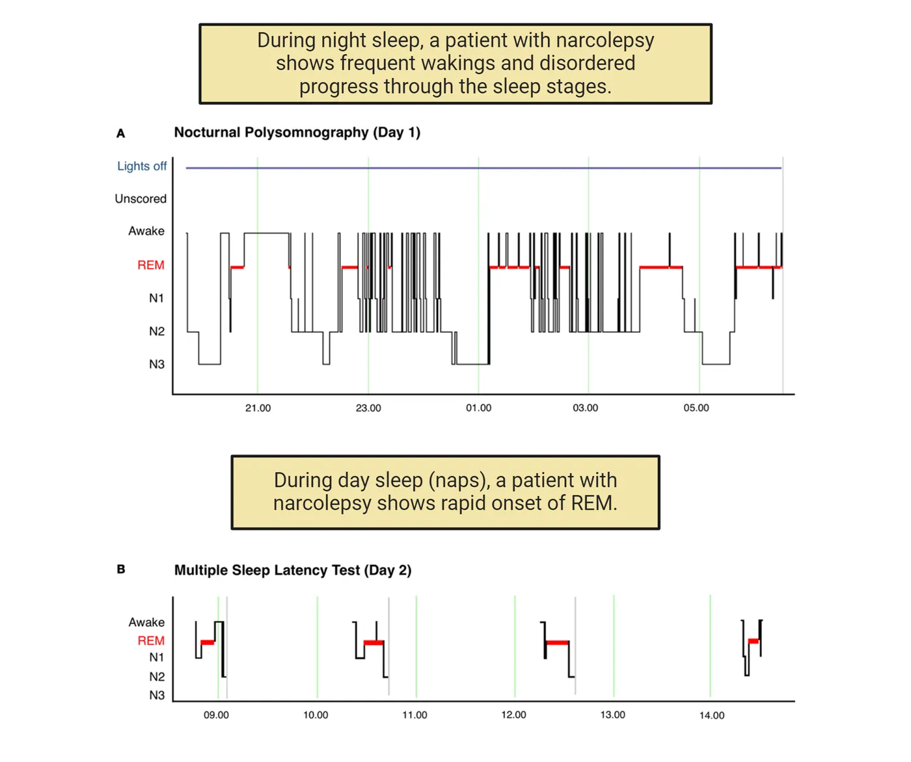
Narcolepsy is characterized by 1) excessive daytime sleepiness, 2) a reduction or loss of muscle tone which is known as cataplexy, 3) visual and auditory hallucinations at the time of waking or falling asleep, and 4) sleep paralysis which is a temporary period in which you cannot move or speak. This occurs at waking or onset of sleeping (Tisdale, Yamanaka, and Kilduff; 2021). Narcolepsy is often treated with stimulants and lifestyle adjustments.
One type of narcolepsy is caused by specific gene mutations that alter a neuropeptide called orexin or its receptor. Orexins, also known as hypocretins, are hypothalamic-specific peptides found in the lateral hypothalamus and surrounding nuclei, and have primarily excitatory effects on neurons. They appear to be important in gating the transition between the waking and sleep states, such that when the system is defective it becomes more difficult to sustain wakefulness. Evidence in support of the important role of orexins in this condition comes from animal studies. Mice missing the gene for orexins or its receptors show narcolepsy-like symptoms, and narcolepsy in dogs is the result of a mutation in the orexin receptor 2 gene (Hypocretin receptor 2).
Delayed Sleep-Wake Phase Disorder (DSWPD)
In delayed sleep-wake phase disorder (DSWPD) an individual has difficulty falling asleep at socially appropriate and/or desired times. For example, a person might need to go to bed at 11 pm so that they can get enough sleep for school or work the following day. However, an individual with DSWPD struggles to fall asleep or wake up at the correct times of day. Sleep in individuals with DSWPD is delayed 2-6 hours later than conventional bed times (Micic et al., 2016). The amount of sleep is compromised, and, when they do wake up, they have sleep inertia or decreased alertness and excessive daytime sleepiness. To diagnose this condition, a patient must keep a prospective sleep diary for at least 7 days and have a discussion with a doctor. In some cases, a patient may wear a wrist device that records the timing of their sleep schedule. This condition may be diagnosed as insomnia. However, if the individual is allowed to set their own sleep and wake schedule then they have no trouble falling asleep or staying asleep, they have normal sleep quality, and they have no daytime sleepiness (Meyer et al., 2022). Thus, it appears that an individual with DSWPD has a circadian rhythm that is delayed relative to the environmental light cycle. The prevalence of this disease is estimated between 0.17-1.54% in children and in adolescent and young adults this can increase to 3.3%-7.3%. However, only about 0.7% of middle aged patients are diagnosed with this disease (Micec et al., 2016). This increase in the number of teenagers that are diagnosed with DSWPD maps onto the "night owl" chronotype that begins to emerge at adolescence (Meyer et al., 2022). While an advancement in the timing of circadian rhythms typically occurs in individuals as they progress through adulthood, some people will retain this significant delay in the timing of their sleep onset. DSWPD can be treated by addressing the underlying biological clock. Specifically, treatments include melatonin, bright light therapy, and light avoidance through the use of blue light blocking glasses at specific times of the day. However, more treatments need to be developed.
Summary
Disorders of sleep and circadian rhythms can have a serious impact on the lives of those suffering from such conditions. Such conditions are common but often go untreated. Examples discussed in more detail are non-24 hour sleep/wake disorder, narcolepsy, and delayed sleep-wake phase syndrome.
Key terms
non-24 hour sleep-wake disorder, narcolepsy, cataplexy, sleep paralysis, orexin, delayed sleep wake phase disorder, sleep inertiaReferences
Baker, F. C., de Zambotti, M., Colrain, I. M., & Bei, B. (2018). Sleep problems during the menopausal transition: Prevalence, impact, and management challenges. Nature and Science of Sleep, 10, 73–95. https://doi.org/10.2147/NSS.S125807
Ju, Y. S., Videnovic, A., & Vaughn, B. V. (2017). Comorbid sleep disturbances in neurologic disorders. Continuum (Minneapolis, Minn.), 23(4, Sleep Neurology), 1117–1131. https://doi.org/10.1212/CON.0000000000000501
Medic, G., Wille, M., & Hemels, M. E. (2017). Short- and long-term health consequences of sleep disruption. Nature and Science of Sleep, 9, 151–161. https://doi.org/10.2147/NSS.S134864
Meyer, N., Harvey, A. G., Lockley, S. W., & Dijk, D. J. (2022). Circadian rhythms and disorders of the timing of sleep. Lancet (London, England), 400(10357), 1061–1078. https://doi.org/10.1016/S0140-6736(22)00877-7
Micic, G., Lovato, N., Gradisar, M., Ferguson, S. A., Burgess, H. J., & Lack, L. C. (2016). The etiology of delayed sleep phase disorder. Sleep Medicine Reviews, 27, 29–38. https://doi.org/10.1016/j.smrv.2015.06.004
Practice The multiple-choice and fill-in-the-blank questions for this section are interactive and live on OpenStax, so they are not carried here: open the book on openstax.org.
15.5Circadian Rhythms and Society
By the end of this section, you should be able to
- Describe how human biological rhythms of individuals intersect with societal demands and policies.
- Describe how deficits in sleep impact on different measures of human performance.
- Describe how knowledge of biological rhythms of diseases has influenced how we develop therapeutics (chronotherapeutics).
Our biological rhythms can influence our ability to work at certain times of day, the effectiveness of medication, our health, societal practices such as daylight savings time, and educational policies. Disruptions to rhythms such as sleep deprivation have consequences to our health and society.
Daylight Savings Time
In the United States, Canada, Australia, the United Kingdom and the European Union, there is a practice to advance clocks by 1 hour during the warmer months. In the US, we refer to this as Daylight Savings Time (DST) and the concept is to align human activities (and the time on their watch) to the presence of daylight. The change in clock time results in people waking up an hour earlier and conducting their work during an additional daylight hour during the summer. In the cooler months, we return the clocks back to Standard Time.
Recently there has been much debate about DST and its consequences on human health and society. There are numerous reports that in the days following the transition to DST, there is an increase in ischemic strokes and myocardial infarction compared to the week before the time change (Sipila et al., 2016). Following the DST change, there is also a 6% increase in fatal traffic accidents, with the largest increases occurring in the morning hours, although this impact on traffic has not been found in all studies (Fritz et al., 2020). There is also an increase in workplace injuries. The underlying cause for these health consequences and increased risk of accidents is likely due to sleep deprivation. The DST transition typically results in 40 min less sleep the following day and this results in a decrease in sleep quality, fatigue, and a decrease in vigilance. As a result of these negative consequences, there are position statements from the Society for Biological Rhythms and the American Academy of Sleep Medicine that support abolishing DST and maintaining our watches on Standard Time, based on the idea that this clock time best matches the time of day represented by the sun.
Shift Work
In our modern society, shift work has become a necessity and between 18 and 26% of the United States population (26-38 million people) participates in shift work. Shift work can be defined as any work that occurs outside the hours of 7 am to 6 pm. Shift workers are thus working at times when their internal biological clock says they should be sleeping. People work around the clock in transportation and airline travel, health care and medicine, security, hospitality, and manufacturing. Shift work schedules vary widely. Some people may be on a regular schedule even if those working hours occur at night or very early morning; some individuals may have a rotating schedule where they work night shifts in some weeks and day shifts in others. Shift workers are at a higher risk than the general population for a variety of diseases including obesity, metabolic disorder, cancer, insulin resistance, heart disease, and systemic inflammation.
The misalignment between scheduled work times and the internal rhythms may result in restricted sleep times. This sleep deprivation can result in consequences on the job including increased fatigue, decreased alertness, and cognitive decline. This can lead to an increase in mistakes and accidents that occur on the job. One estimate is that night shift workers have a 30-50% increase in the chance of having an accident in the workplace compared to workers on other shifts. Furthermore, night shift workers are significantly more likely to have a fatal accident at their place of employment compared to non-night shift workers (Harrison, 2013).
Endocrine rhythms are also misaligned in shift workers. Normally cortisol (a stress hormone, see Introduction) has a surge at the beginning of the day and melatonin peaks at night during the dark. These rhythms in hormone secretions are reduced in amplitude or their pattern is altered in shift workers. In fact, there is no sign that these rhythms adapt to the shift work schedule and thus the peak of melatonin, even though reduced, still occurs during the night shift while the individual is at work.
In addition to sleep deprivation, another consideration of shift work is that meals are mistimed relative to internal rhythms. In simulated night shifts in a lab setting, in human studies with light at night, or in studies of a cross section of shift workers, there is increased insulin and disrupted leptin concentrations (see Introduction). The alterations in these hormones can even be detected when the blood is sampled on a day when the individual is not working. These critical hormones are associated with metabolism, glucose homeostasis, and food intake. In animal studies where they model circadian misalignment, these results are duplicated and mice with perturbed rhythms have an increased body weight and altered leptin concentrations. These disruptions to metabolism may be an important factor underlying the increased risk of metabolic disease and obesity that occurs in populations of shift workers.
Long Term Impact of Sleep Deficits on Health
Chronic sleep deprivation refers to a state in which an individual has an insufficient amount of sleep over an extended period of time. According to the American Academy of Sleep Medicine, sleep deprivation becomes chronic when the period of insufficient sleep persists for more than three months. Chronic sleep deficiency is another term that includes sleep deprivation but also covers the case where sleep is fragmented or otherwise disrupted. Such conditions have a direct impact on both cognitive and physical performance and can contribute to an elevated risk of a wide variety of disorders from diabetes to elevated pain sensitivity to several mental health disorders. Fortunately, many types of sleep disorders that cause sleep deprivation or insufficiency are treatable through behavioral interventions.
Naps as Therapy
One theme of this chapter is how disruptions to your circadian clock or sleep cycle can have a negative impact on your health. Can napping during the day alleviate some of these issues? There is a change in the amount of napping which occurs across the lifespan and a change in the type of sleep that occurs during the nap. In infants, naps resemble nighttime sleep because they both contain REM sleep. Naps in young children consist of more non-REM sleep than REM sleep. In young adults, longer naps will contain both REM and non-REM sleep; however naps in older adults consist of lighter sleep stages with a bout of slow wave sleep (non REM stage 3). Napping can be done to counteract sleepiness or recuperate from a reduction in sleep, in anticipation of extended sleep loss such as might occur with a night shift worker, or just for enjoyment or boredom.
There are many documented benefits to naps, with the first being that napping reduces the homeostatic sleep pressure that accumulates with wakefulness. Individuals that nap have both objective and subjective improvement in alertness, enhanced cognition, improved short term memory, and improved mood. The best time to take a nap is in the early afternoon, between 1 and 3 pm (Dutheil et al., 2021). Naps later than this can interfere with your ability to fall asleep that evening. There is an effect of nap duration on cognitive function after waking. If you take a nap in the afternoon following a normal night of sleep then a short nap is beneficial. Specifically, naps 10-30 min long result in an immediate improvement in alertness and performance on cognitive tasks upon awakening and this effect can last for up to 2 hours (Leong et al., 2023). These shorter naps typically contain stage 1 and stage 2 non-REM sleep. However, longer naps, particularly those that contain slow wave sleep (stage 3 non-REM sleep), result in an initial decrease in alertness that is described as sleep inertia. This grogginess upon waking is associated with a decline in motor performance, cognition, and mood and may last between 30 and 60 minutes. However, after this period passes, there is an increase in alertness and a decrease in fatigue that lasts for several hours. Additionally, longer naps may be more beneficial in individuals that are experiencing sleep deprivation.
Sleep Hygiene and College Students
Being a young adult is an exciting and stressful time with educational, extracurricular, work, and social opportunities. As a result, it may be hard to find the time to get everything accomplished without sacrificing some sleep. In fact, college-aged individuals require about 8-9 hours of sleep a night but between 70-96% report getting less than 8 hours a night. Around 50% of college students report excessive daytime fatigue and sleepiness at least 3 times a week. This sleepiness can be caused by acute lapses in sleep ("all nighters") or chronic partial sleep deprivation. Partial sleep deprivation occurs when students routinely get less sleep than they require, for example college students report getting between 5.7-6.5 hours a night.
What is the consequence of eliminating sleep that you need? It's unlikely that the occasional all-nighter will have significant consequences, but being chronically tired and not getting enough sleep can be detrimental to academic success and mood. For example, students that had a total sleep time of 9 or more hours had an average GPA of 3.24 whereas those with 6 hours or less a night had an average GPA of 2.74 (Kelly, Kelly, and Clanton, 2001). In other studies, sleep patterns played a larger role than total sleep time. Specifically, later bedtimes or later wake up times were associated with lower GPAs (Trockel, Barnes, and Egget, 2000). There is also a relationship between irregular sleep patterns, poor sleep quality and increased anxiety symptoms in university students. In a study of 462 university students, insomnia severity was associated with anxiety severity (Choueiry et al., 2016). Furthermore, when colleges have wellness classes or incentive programs that improve the amount of sleep and sleep schedule, anxiety decreases, and grades improve or stay the same, indicating that students can increase their sleep while maintaining their same GPA.
You can take daytime and evening steps to promote healthy sleep. This is called sleep hygiene. These steps include having a consistent bedtime and wake time, resisting the use of screens in the hour before bed as the blue light emitted by your phone can disrupt your circadian clock, having a period of time before bed where you wind down and relax, and maintaining a dark and cool bedroom. If you have a roommate, this can be difficult but you can try earplugs and eye masks to help. It is also advised that you are careful with alcohol and caffeine use. Alcohol can help you fall asleep but disrupts your restorative sleep, and studies show that caffeine use even 6 hours before bedtime causes problems with sleep quality.
Social Jetlag
As we have described in a previous section, people can exhibit chronotypes such as "night owl" or "lark". These preferences for specific times for sleep/activity can be in conflict with external timing requirements such as work and school. Social jetlag occurs when an individual fits their sleep/wake schedule to match their requirements during the week, but then they allow their internal clock to dictate their sleep/wake schedule on weekends (Social jet lag). There is a discrepancy between the schedule of sleep during the week and weekend. For example, a college student may get up at 9 am and go to bed at midnight Sunday-Thursday. But on Friday and Saturday they may stay awake until 2 am and get up at 11 am. When Monday morning rolls around, the student would have to readjust their schedule again and wake up 2 hours sooner than they would prefer, as if they were adapting to a new time zone. This phenomena can be worse in night owl chronotypes, as they may experience difficulty falling asleep early, yet they still have to wake up early for school or work.
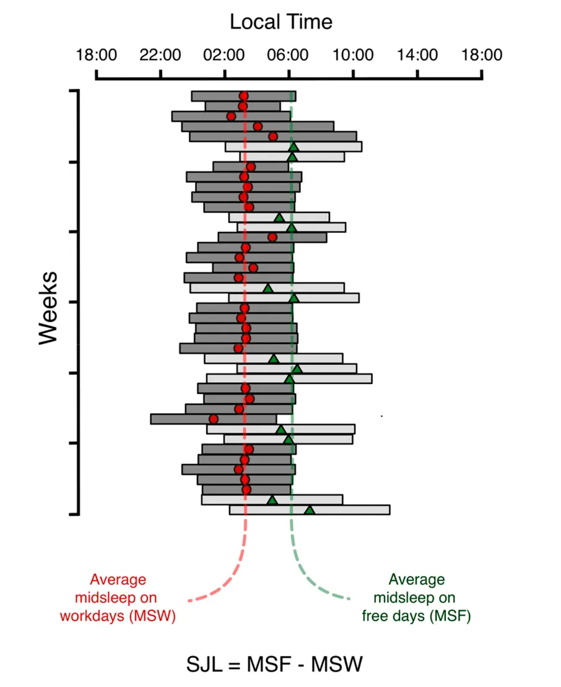
Social jet lag can generate poor sleep quality and chronic partial sleep deprivation. As a result, people experiencing social jet lag have reduced attention, increased fatigue, and poor performance at school or work. A variety of studies also find that people experiencing social jet lag have an association with obesity, diabetes, and depression as well as risk factors for metabolic disorder such as high total cholesterol and triglycerides (Castilhoa Beauvalet et al., 2017). As described above, getting healthy sleep on a consistent schedule is key to helping correct social jet lag.
Chronotherapeutics
Chronotherapy, also called chronomedicine, is based on the idea that medicine may be more effective, have fewer side effects, and have higher tolerability, if it is administered at an optimal time of day matching the rhythms of the disease. As we have emphasized throughout this chapter, physiology has many daily rhythms as seen in biochemical reactions, gene changes, and hormone secretion patterns. It makes sense that medication should be administered at a time of day when disease symptoms are expressed at their highest levels. Furthermore, there is evidence that people with consistent and strong circadian rhythms are more likely to have better health than those with rhythms that are disrupted or have low amplitude rhythms. Strengthening rhythms in sleep/wake cycles, mealtimes, or endocrine secretion patterns such as melatonin signaling can reduce health problems and improve health.
Asthma and Bronchodilators
Asthma is a chronic disease characterized by difficulty breathing caused by inflammation and constriction of the airways. Up to 75% of asthma sufferers have "nocturnal asthma" where they report having more significant symptoms during the nighttime hours. Sometimes these symptoms cause disruptions to sleep. Studies of asthma sufferers in the lab reveals that there is a circadian rhythm in pulmonary function, airway resistance, and airway inflammation independent from the influence of sleep, posture, or locomotor activity. Further, there is a daily rhythm in discomfort which peaks at night which corresponds to the daily rhythm in the use of rescue-based inhalers at this time (Litinski, Scheer, and Shea, 2009). In addition to rescue inhalers, people with asthma may also be prescribed a once-daily use of inhaled corticosteroids to help with airflow. In a large meta-analysis of over 1200 patients, it was found that use of this treatment at night led to better pulmonary function compared to use of it in the morning (Song, Park, and Lee, 2018). Asthma is just one example of how therapies for ailments can be optimized by basing the timing of delivery on biological rhythms.
Cancer Therapies
Circadian rhythms have a bidirectional relationship with the development and growth of cancers. Epidemiological studies in humans and laboratory studies using rodent models have linked circadian disruptions to cancer. In fact, this link of disruption of your clock to cancer prevalence led to the World Health Organization to declare shift work as a "likely carcinogen". In humans, chronic jet lag, shift work, or exposure to light at night are associated with an increased risk for many types of cancer including colon, breast, prostate, and lung. Humans with polymorphisms in the clock genes Clock and Bmal1 have increased susceptibility to certain types of cancers. In animal studies, circadian rhythm disruption can be induced by lesioning the SCN or putting animals in chronic jet lag conditions. When these mice are inoculated with cancer cells that develop into a tumor, the tumor grows both faster and larger in the animals with circadian perturbations. Similarly, mice with mutations in clock related genes also have an increased susceptibility to spontaneous cancers and radiation induced cancers.
Treatment of cancer can be improved by incorporating circadian rhythms into the therapy. Patients that maintain more regular daily patterns of activity have a longer survival rate, and respond to drug treatment better than those with disrupted daily rhythms. In patients with colorectal cancer, time of day of administration of the chemotherapy drug influenced the efficacy of the treatment as well as the ability of the patient to tolerate high doses of the drug (Levi et al., 1994). Interestingly, the time of day of drug effectiveness varies for each drug. Understanding circadian biology of the patient, tumor cell type, and medication effectiveness can be used to tailor cancer therapy that has the maximal anticancer effects, the lowest side effects, and a resultant increase in survival rates.
Summary
We can become sleep deprived due to shift work, daylight savings time changes, or reducing our sleep to gain study time. Sleep deprivation and disruptions to the circadian system can have a major negative impact on human health, but treatment of many conditions is effective through behavioral interventions. Furthermore, relief of circadian and sleep symptoms can contribute to improvement in underlying comorbid conditions.
Key terms
Daylight savings time, shift work, chronic sleep deprivation, chronic sleep deficiency, sleep hygiene, social jet lag, chronotherapeutics, chronomedicineReferences
Akerstedt, T., Fredlund, P., Gillberg, M., & Jansson, B. (2002). A prospective study of fatal occupational accidents—relationship to sleeping difficulties and occupational factors. Journal of Sleep Research, 11(1), 69–71. https://doi.org/10.1046/j.1365-2869.2002.00287.x
Barnes, C. M., & Wagner, D. T. (2009). Changing to daylight saving time cuts into sleep and increases workplace injuries. The Journal of Applied Psychology, 94(5), 1305–1317. https://doi.org/10.1037/a0015320
Boivin, D. B., Boudreau, P., & Kosmadopoulos, A. (2022). Disturbance of the circadian system in shift work and its health impact. Journal of Biological Rhythms, 37(1), 3–28. https://doi.org/10.1177/07487304211064218
Brooks, A., & Lack, L. (2006). A brief afternoon nap following nocturnal sleep restriction: Which nap duration is most recuperative?. Sleep, 29(6), 831–840. https://doi.org/10.1093/sleep/29.6.831
Castilhos Beauvalet, J., Luísa Quiles, C., Alves Braga De Oliveira, M., Vieira Ilgenfritz, C. A., Hidalgo, M. P., & Comiran Tonon, A. (2017). Social jetlag in health and behavioral research: A systematic review. ChronoPhysiology and Therapy, 7, 19–31.
Choueiry, N., Salamoun, T., Jabbour, H., El Osta, N., Hajj, A., & Rabbaa Khabbaz, L. (2016). Insomnia and relationship with anxiety in university students: A cross-sectional designed study. PloS One, 11(2), e0149643. https://doi.org/10.1371/journal.pone.0149643
Drake, C., Roehrs, T., Shambroom, J., & Roth, T. (2013). Caffeine effects on sleep taken 0, 3, or 6 hours before going to bed. Journal of Clinical Sleep Medicine: JCSM: Official Publication of the American Academy of Sleep Medicine, 9(11), 1195–1200. https://doi.org/10.5664/jcsm.3170
Dutheil, F., Danini, B., Bagheri, R., Fantini, M. L., Pereira, B., Moustafa, F., Trousselard, M., & Navel, V. (2021). Effects of a short daytime nap on cognitive performance: A systematic review and meta-analysis. International Journal of Environmental Research and Public Health, 18(19), 10212. https://doi.org/10.3390/ijerph181910212
Fritz, J., VoPham, T., Wright, K. P., Jr., & Vetter, C. (2020). A chronobiological evaluation of the acute effects of daylight saving time on traffic accident risk. Current Biology: CB, 30(4), 729–735.e2. https://doi.org/10.1016/j.cub.2019.12.045
Harrison, Y. (2013). The impact of daylight saving time on sleep and related behaviours. Sleep Medicine Reviews, 17(4), 285–292. https://doi.org/10.1016/j.smrv.2012.10.001
Hayashi, M., Watanabe, M., & Hori, T. (1999). The effects of a 20 min nap in the mid-afternoon on mood, performance and EEG activity. Clinical Neurophysiology: Official Journal of the International Federation of Clinical Neurophysiology, 110(2), 272–279. https://doi.org/10.1016/s1388-2457(98)00003-0
Hershner, S. D., & Chervin, R. D. (2014). Causes and consequences of sleepiness among college students. Nature and Science of Sleep, 6, 73–84. https://doi.org/10.2147/NSS.S62907
Horne, J. A., & Reyner, L. A. (1996). Counteracting driver sleepiness: Effects of napping, caffeine, and placebo. Psychophysiology, 33(3), 306–309. https://doi.org/10.1111/j.1469-8986.1996.tb00428.x
James, S. M., Honn, K. A., Gaddameedhi, S., & Van Dongen, H. P. A. (2017). Shift work: Disrupted circadian rhythms and sleep-implications for health and well-being. Current Sleep Medicine Reports, 3(2), 104–112. https://doi.org/10.1007/s40675-017-0071-6
Jarjour, N. N., Lacouture, P. G., & Busse, W. W. (1998). Theophylline inhibits the late asthmatic response to nighttime antigen challenge in patients with mild atopic asthma. Annals of Allergy, Asthma & Immunology: Official Publication of the American College of Allergy, Asthma, & Immunology, 81(3), 231–236. https://doi.org/10.1016/S1081-1206(10)62817-7
Kelly, W. E., Kelly, K. E., & Clanton, R. C. (2001). The relationship between sleep length and grade-point average among college students. College Student Journal, 35(1), 84–86.
Kettner, N. M., Mayo, S. A., Hua, J., Lee, C., Moore, D. D., & Fu, L. (2015). Circadian dysfunction induces leptin resistance in mice. Cell Metabolism, 22(3), 448–459. https://doi.org/10.1016/j.cmet.2015.06.005
Leong, R. L. F., Lau, T., Dicom, A. R., Teo, T. B., Ong, J. L., & Chee, M. W. L. (2023). Influence of mid-afternoon nap duration and sleep parameters on memory encoding, mood, processing speed, and vigilance. Sleep, 46(4), zsad025. https://doi.org/10.1093/sleep/zsad025
Lévi, F. A., Zidani, R., Vannetzel, J. M., Perpoint, B., Focan, C., Faggiuolo, R., Chollet, P., Garufi, C., Itzhaki, M., & Dogliotti, L. (1994). Chronomodulated versus fixed-infusion-rate delivery of ambulatory chemotherapy with oxaliplatin, fluorouracil, and folinic acid (leucovorin) in patients with colorectal cancer metastases: A randomized multi-institutional trial. Journal of the National Cancer Institute, 86(21), 1608–1617. https://doi.org/10.1093/jnci/86.21.1608
Litinski, M., Scheer, F. A., & Shea, S. A. (2009). Influence of the circadian system on disease severity. Sleep Medicine Clinics, 4(2), 143–163. https://doi.org/10.1016/j.jsmc.2009.02.005
Malow, B. A., Veatch, O. J., & Bagai, K. (2020). Are daylight saving time changes bad for the brain?. JAMA Neurology, 77(1), 9–10. https://doi.org/10.1001/jamaneurol.2019.3780
Manfredini, R., Fabbian, F., Cappadona, R., De Giorgi, A., Bravi, F., Carradori, T., Flacco, M. E., & Manzoli, L. (2019). Daylight saving time and acute myocardial infarction: A meta-analysis. Journal of Clinical Medicine, 8(3), 404. https://doi.org/10.3390/jcm8030404
Mantua, J., & Spencer, R. M. C. (2017). Exploring the nap paradox: Are mid-day sleep bouts a friend or foe?. Sleep Medicine, 37, 88–97. https://doi.org/10.1016/j.sleep.2017.01.019
Nishino, S., Ripley, B., Overeem, S., Lammers, G. J., & Mignot, E. (2000). Hypocretin (orexin) deficiency in human narcolepsy. Lancet (London, England), 355(9197), 39–40. https://doi.org/10.1016/S0140-6736(99)05582-8
Peyron, C., Faraco, J., Rogers, W., Ripley, B., Overeem, S., Charnay, Y., Nevsimalova, S., Aldrich, M., Reynolds, D., Albin, R., Li, R., Hungs, M., Pedrazzoli, M., Padigaru, M., Kucherlapati, M., Fan, J., Maki, R., Lammers, G. J., Bouras, C., Kucherlapati, R., … Mignot, E. (2000). A mutation in a case of early onset narcolepsy and a generalized absence of hypocretin peptides in human narcoleptic brains. Nature Medicine, 6(9), 991–997. https://doi.org/10.1038/79690
Sawyer, H., & Taie, W. S. (2020). Start time for U.S. public high schools. NCES 2020006 Edition. https://nces.ed.gov/pubs2020/2020006/index.asp
Sipilä, J. O., Ruuskanen, J. O., Rautava, P., & Kytö, V. (2016). Changes in ischemic stroke occurrence following daylight saving time transitions. Sleep Medicine, 27-28, 20–24. https://doi.org/10.1016/j.sleep.2016.10.009
Song, J. U., Park, H. K., & Lee, J. (2018). Impact of dosage timing of once-daily inhaled corticosteroids in asthma: A systematic review and meta-analysis. Annals of Allergy, Asthma & Immunology: Official Publication of the American College of Allergy, Asthma, & Immunology, 120(5), 512–519. https://doi.org/10.1016/j.anai.2017.12.021
Tisdale, R. K., Yamanaka, A., & Kilduff, T. S. (2021). Animal models of narcolepsy and the hypocretin/orexin system: Past, present, and future. Sleep, 44(6), zsaa278. https://doi.org/10.1093/sleep/zsaa278
Trockel, M. T., Barnes, M. D., & Egget, D. L. (2000). Health-related variables and academic performance among first-year college students: Implications for sleep and other behaviors. Journal of American College Health: J of ACH, 49(3), 125–131. https://doi.org/10.1080/07448480009596294
Turner-Warwick, M. (1988). Epidemiology of nocturnal asthma. The American Journal of Medicine, 85(1B), 6–8. https://doi.org/10.1016/0002-9343(88)90231-8
Wagstaff, A. S., & Sigstad Lie, J. A. (2011). Shift and night work and long working hours—a systematic review of safety implications. Scandinavian Journal of Work, Environment & Health, 37(3), 173–185. https://doi.org/10.5271/sjweh.3146
Zhang, H., Dahlén, T., Khan, A., Edgren, G., & Rzhetsky, A. (2020). Measurable health effects associated with the daylight saving time shift. PloS Computational Biology, 16(6), e1007927. https://doi.org/10.1371/journal.pcbi.1007927
Practice The multiple-choice and fill-in-the-blank questions for this section are interactive and live on OpenStax, so they are not carried here: open the book on openstax.org.
Adapted from Introduction to Behavioral Neuroscience by OpenStax, licensed under CC BY-NC-SA 4.0. Access for free at openstax.org. Changes: set in this site’s own pages and type, the images recompressed, the interactive exercises and videos linked rather than carried. This adaptation is offered under the same licence.